| ComCat M6.4 (ci38443183), Point Sources, Impose G-R | |
|---|---|
| Num Simulations | 73900 (incomplete) |
| Start Time | 2019/07/04 17:33:50 UTC |
| Start Time Epoch Milliseconds | 1562261630000 |
| Duration | 10 Years |
| Includes Spontaneous? | false |
| Historical Ruptures | (none) |
| Config Generated With | u3etas_comcat_event_config_builder.sh --event-id ci38443183 --num-simulations 100000 --days-before 7 --impose-gr --mag-complete 3.5 --hpc-site USC_HPC --nodes 36 --hours 24 --queue scec |
| Magnitude | 1 Hour Prob | 1 Day Prob | 1 Week Prob | 1 Month Prob | 1 Year Prob | 10 Year Prob |
|---|---|---|---|---|---|---|
| M≥3 | 1.000 (100.00%) | 1.000 (100.00%) | 1.000 (100.00%) | 1.000 (100.00%) | 1.000 (100.00%) | 1.000 (100.00%) |
| M≥3.5 | 1.000 (99.99%) | 1.000 (100.00%) | 1.000 (100.00%) | 1.000 (100.00%) | 1.000 (100.00%) | 1.000 (100.00%) |
| M≥4 | 0.949 (94.85%) | 0.999 (99.91%) | 1.000 (99.99%) | 1.000 (100.00%) | 1.000 (100.00%) | 1.000 (100.00%) |
| M≥4.5 | 0.608 (60.79%) | 0.898 (89.85%) | 0.955 (95.48%) | 0.975 (97.49%) | 0.990 (99.03%) | 0.996 (99.57%) |
| M≥5 | 0.255 (25.50%) | 0.520 (52.03%) | 0.638 (63.80%) | 0.706 (70.55%) | 0.790 (79.03%) | 0.843 (84.29%) |
| M≥5.5 | 0.085 (8.53%) | 0.202 (20.24%) | 0.271 (27.09%) | 0.318 (31.81%) | 0.392 (39.16%) | 0.450 (45.02%) |
| M≥6 | 0.022 (2.22%) | 0.057 (5.70%) | 0.080 (8.03%) | 0.097 (9.68%) | 0.127 (12.65%) | 0.153 (15.32%) |
| M≥6.4 | 6.94E-3 (0.69%) | 0.019 (1.90%) | 0.027 (2.72%) | 0.033 (3.32%) | 0.044 (4.41%) | 0.054 (5.45%) |
| M≥6.5 | 5.06E-3 (0.51%) | 0.014 (1.44%) | 0.020 (2.02%) | 0.025 (2.46%) | 0.033 (3.29%) | 0.040 (4.05%) |
| M≥7 | 8.66E-4 (0.09%) | 2.81E-3 (0.28%) | 4.10E-3 (0.41%) | 4.97E-3 (0.50%) | 7.02E-3 (0.70%) | 8.99E-3 (0.90%) |
| M≥7.5 | 9.47E-5 (0.01%) | 4.47E-4 (0.04%) | 7.58E-4 (0.08%) | 9.07E-4 (0.09%) | 1.26E-3 (0.13%) | 1.80E-3 (0.18%) |
| M≥8 | 0.000 (0.00%) | 1.35E-5 (0.00%) | 1.35E-5 (0.00%) | 1.35E-5 (0.00%) | 1.35E-5 (0.00%) | 1.35E-5 (0.00%) |
Legend
| Mag | Mean | 2.5 %ile | 97.5 %ile | Median | Mode | 10 yr Probability | 10 yr Supra-Seis Prob | Primary Aftershocks Mean |
|---|---|---|---|---|---|---|---|---|
| M≥2.5 | 909.953 | 544.000 | 2460.000 | 718.000 | 634.000 | 1.000 (100.00%) | 0.019 (1.93%) | 419.123 |
| M≥2.6 | 722.763 | 429.000 | 1954.000 | 571.000 | 525.000 | 1.000 (100.00%) | 0.019 (1.93%) | 332.871 |
| M≥2.7 | 574.065 | 337.000 | 1549.000 | 454.000 | 385.000 | 1.000 (100.00%) | 0.019 (1.93%) | 264.401 |
| M≥2.8 | 455.947 | 265.000 | 1230.000 | 361.000 | 329.000 | 1.000 (100.00%) | 0.019 (1.93%) | 209.995 |
| M≥2.9 | 362.153 | 208.000 | 979.000 | 287.000 | 246.000 | 1.000 (100.00%) | 0.019 (1.93%) | 166.810 |
| M≥3 | 287.669 | 163.000 | 781.000 | 229.000 | 204.000 | 1.000 (100.00%) | 0.019 (1.93%) | 132.512 |
| M≥3.1 | 228.506 | 127.000 | 620.000 | 182.000 | 157.000 | 1.000 (100.00%) | 0.019 (1.93%) | 105.270 |
| M≥3.2 | 181.521 | 99.000 | 493.000 | 145.000 | 128.000 | 1.000 (100.00%) | 0.019 (1.93%) | 83.633 |
| M≥3.3 | 144.185 | 77.000 | 392.000 | 115.000 | 103.000 | 1.000 (100.00%) | 0.019 (1.93%) | 66.435 |
| M≥3.4 | 114.507 | 59.000 | 313.000 | 92.000 | 85.000 | 1.000 (100.00%) | 0.019 (1.93%) | 52.762 |
| M≥3.5 | 90.936 | 45.000 | 250.000 | 73.000 | 68.000 | 1.000 (100.00%) | 0.019 (1.93%) | 41.896 |
| M≥3.6 | 72.223 | 35.000 | 199.000 | 58.000 | 52.000 | 1.000 (100.00%) | 0.019 (1.93%) | 33.271 |
| M≥3.7 | 57.349 | 26.000 | 158.000 | 46.000 | 42.000 | 1.000 (100.00%) | 0.019 (1.93%) | 26.419 |
| M≥3.8 | 45.532 | 20.000 | 126.000 | 37.000 | 33.000 | 1.000 (100.00%) | 0.019 (1.93%) | 20.976 |
| M≥3.9 | 36.161 | 15.000 | 100.000 | 29.000 | 26.000 | 1.000 (100.00%) | 0.019 (1.93%) | 16.652 |
| M≥4 | 28.698 | 11.000 | 81.000 | 23.000 | 20.000 | 1.000 (100.00%) | 0.019 (1.93%) | 13.226 |
| M≥4.1 | 22.783 | 8.000 | 65.000 | 18.000 | 16.000 | 1.000 (100.00%) | 0.019 (1.93%) | 10.501 |
| M≥4.2 | 18.083 | 6.000 | 52.000 | 15.000 | 12.000 | 1.000 (100.00%) | 0.019 (1.93%) | 8.331 |
| M≥4.3 | 14.344 | 4.000 | 42.000 | 11.000 | 9.000 | 1.000 (99.97%) | 0.019 (1.93%) | 6.609 |
| M≥4.4 | 11.372 | 3.000 | 34.000 | 9.000 | 7.000 | 0.999 (99.90%) | 0.019 (1.93%) | 5.240 |
| M≥4.5 | 9.018 | 2.000 | 27.000 | 7.000 | 6.000 | 0.996 (99.57%) | 0.019 (1.93%) | 4.159 |
| M≥4.6 | 7.144 | 1.000 | 22.000 | 6.000 | 5.000 | 0.988 (98.82%) | 0.019 (1.93%) | 3.297 |
| M≥4.7 | 5.657 | 0.000 | 18.000 | 4.000 | 3.000 | 0.972 (97.16%) | 0.019 (1.93%) | 2.614 |
| M≥4.8 | 4.476 | 0.000 | 15.000 | 3.000 | 2.000 | 0.943 (94.29%) | 0.019 (1.93%) | 2.068 |
| M≥4.9 | 3.535 | 0.000 | 12.000 | 3.000 | 2.000 | 0.900 (89.96%) | 0.019 (1.93%) | 1.633 |
| M≥5 | 2.790 | 0.000 | 10.000 | 2.000 | 1.000 | 0.843 (84.29%) | 0.019 (1.93%) | 1.291 |
| M≥5.1 | 2.201 | 0.000 | 9.000 | 2.000 | 1.000 | 0.774 (77.39%) | 0.019 (1.93%) | 1.021 |
| M≥5.2 | 1.726 | 0.000 | 7.000 | 1.000 | 0.000 | 0.696 (69.58%) | 0.019 (1.93%) | 0.802 |
| M≥5.3 | 1.349 | 0.000 | 6.000 | 1.000 | 0.000 | 0.613 (61.31%) | 0.019 (1.93%) | 0.628 |
| M≥5.4 | 1.052 | 0.000 | 5.000 | 1.000 | 0.000 | 0.530 (52.97%) | 0.019 (1.93%) | 0.491 |
| M≥5.5 | 0.815 | 0.000 | 4.000 | 0.000 | 0.000 | 0.450 (45.02%) | 0.019 (1.93%) | 0.382 |
| M≥5.6 | 0.629 | 0.000 | 4.000 | 0.000 | 0.000 | 0.375 (37.49%) | 0.019 (1.93%) | 0.296 |
| M≥5.7 | 0.480 | 0.000 | 3.000 | 0.000 | 0.000 | 0.308 (30.80%) | 0.019 (1.93%) | 0.228 |
| M≥5.8 | 0.361 | 0.000 | 2.000 | 0.000 | 0.000 | 0.247 (24.68%) | 0.019 (1.93%) | 0.172 |
| M≥5.9 | 0.269 | 0.000 | 2.000 | 0.000 | 0.000 | 0.195 (19.49%) | 0.019 (1.93%) | 0.130 |
| M≥6 | 0.202 | 0.000 | 2.000 | 0.000 | 0.000 | 0.153 (15.32%) | 0.019 (1.93%) | 0.097 |
| M≥6.1 | 0.156 | 0.000 | 1.000 | 0.000 | 0.000 | 0.123 (12.29%) | 0.018 (1.85%) | 0.075 |
| M≥6.2 | 0.115 | 0.000 | 1.000 | 0.000 | 0.000 | 0.095 (9.47%) | 0.016 (1.57%) | 0.056 |
| M≥6.3 | 0.085 | 0.000 | 1.000 | 0.000 | 0.000 | 0.072 (7.23%) | 0.013 (1.27%) | 0.041 |
| M≥6.4 | 0.063 | 0.000 | 1.000 | 0.000 | 0.000 | 0.054 (5.45%) | 0.011 (1.15%) | 0.030 |
| M≥6.5 | 0.046 | 0.000 | 1.000 | 0.000 | 0.000 | 0.040 (4.05%) | 0.010 (1.04%) | 0.022 |
| M≥6.6 | 0.034 | 0.000 | 1.000 | 0.000 | 0.000 | 0.031 (3.11%) | 9.86E-3 (0.99%) | 0.016 |
| M≥6.7 | 0.025 | 0.000 | 0.000 | 0.000 | 0.000 | 0.023 (2.35%) | 8.77E-3 (0.88%) | 0.012 |
| M≥6.8 | 0.018 | 0.000 | 0.000 | 0.000 | 0.000 | 0.017 (1.73%) | 7.48E-3 (0.75%) | 8.48E-3 |
| M≥6.9 | 0.013 | 0.000 | 0.000 | 0.000 | 0.000 | 0.013 (1.26%) | 6.24E-3 (0.62%) | 5.99E-3 |
| M≥7 | 9.27E-3 | 0.000 | 0.000 | 0.000 | 0.000 | 8.99E-3 (0.90%) | 4.91E-3 (0.49%) | 4.02E-3 |
| M≥7.1 | 7.00E-3 | 0.000 | 0.000 | 0.000 | 0.000 | 6.79E-3 (0.68%) | 4.28E-3 (0.43%) | 3.00E-3 |
| M≥7.2 | 5.03E-3 | 0.000 | 0.000 | 0.000 | 0.000 | 4.90E-3 (0.49%) | 3.48E-3 (0.35%) | 2.07E-3 |
| M≥7.3 | 3.14E-3 | 0.000 | 0.000 | 0.000 | 0.000 | 3.09E-3 (0.31%) | 2.44E-3 (0.24%) | 1.26E-3 |
| M≥7.4 | 2.52E-3 | 0.000 | 0.000 | 0.000 | 0.000 | 2.49E-3 (0.25%) | 2.19E-3 (0.22%) | 1.01E-3 |
| M≥7.5 | 1.81E-3 | 0.000 | 0.000 | 0.000 | 0.000 | 1.80E-3 (0.18%) | 1.76E-3 (0.18%) | 6.63E-4 |
| M≥7.6 | 1.06E-3 | 0.000 | 0.000 | 0.000 | 0.000 | 1.04E-3 (0.10%) | 1.01E-3 (0.10%) | 4.47E-4 |
| M≥7.7 | 3.65E-4 | 0.000 | 0.000 | 0.000 | 0.000 | 3.65E-4 (0.04%) | 3.52E-4 (0.04%) | 1.49E-4 |
| M≥7.8 | 2.17E-4 | 0.000 | 0.000 | 0.000 | 0.000 | 2.17E-4 (0.02%) | 2.03E-4 (0.02%) | 9.47E-5 |
| M≥7.9 | 8.12E-5 | 0.000 | 0.000 | 0.000 | 0.000 | 8.12E-5 (0.01%) | 8.12E-5 (0.01%) | 2.71E-5 |
| M≥8 | 1.35E-5 | 0.000 | 0.000 | 0.000 | 0.000 | 1.35E-5 (0.00%) | 1.35E-5 (0.00%) | 1.35E-5 |
| M≥8.1 | 1.35E-5 | 0.000 | 0.000 | 0.000 | 0.000 | 1.35E-5 (0.00%) | 1.35E-5 (0.00%) | 1.35E-5 |
| M≥8.2 | 0.000 | 0.000 | 0.000 | 0.000 | 0.000 | 0.000 (0.00%) | 0.000 (0.00%) | 0.000 |
| M≥8.3 | 0.000 | 0.000 | 0.000 | 0.000 | 0.000 | 0.000 (0.00%) | 0.000 (0.00%) | 0.000 |
| M≥8.4 | 0.000 | 0.000 | 0.000 | 0.000 | 0.000 | 0.000 (0.00%) | 0.000 (0.00%) | 0.000 |
| M≥8.5 | 0.000 | 0.000 | 0.000 | 0.000 | 0.000 | 0.000 (0.00%) | 0.000 (0.00%) | 0.000 |
| M≥8.6 | 0.000 | 0.000 | 0.000 | 0.000 | 0.000 | 0.000 (0.00%) | 0.000 (0.00%) | 0.000 |
| M≥8.7 | 0.000 | 0.000 | 0.000 | 0.000 | 0.000 | 0.000 (0.00%) | 0.000 (0.00%) | 0.000 |
| M≥8.8 | 0.000 | 0.000 | 0.000 | 0.000 | 0.000 | 0.000 (0.00%) | 0.000 (0.00%) | 0.000 |
| M≥8.9 | 0.000 | 0.000 | 0.000 | 0.000 | 0.000 | 0.000 (0.00%) | 0.000 (0.00%) | 0.000 |
| M≥9 | 0.000 | 0.000 | 0.000 | 0.000 | 0.000 | 0.000 (0.00%) | 0.000 (0.00%) | 0.000 |
Legend

| Mag | Mean | 2.5 %ile | 97.5 %ile | Median | Mode | 1 yr Probability | 1 yr Supra-Seis Prob | Primary Aftershocks Mean |
|---|---|---|---|---|---|---|---|---|
| M≥2.5 | 707.915 | 455.000 | 1724.000 | 582.000 | 524.000 | 1.000 (100.00%) | 0.014 (1.45%) | 371.053 |
| M≥2.6 | 562.285 | 357.000 | 1373.000 | 463.000 | 433.000 | 1.000 (100.00%) | 0.014 (1.45%) | 294.699 |
| M≥2.7 | 446.590 | 281.000 | 1089.000 | 369.000 | 331.000 | 1.000 (100.00%) | 0.014 (1.45%) | 234.080 |
| M≥2.8 | 354.677 | 220.000 | 866.000 | 293.000 | 275.000 | 1.000 (100.00%) | 0.014 (1.45%) | 185.914 |
| M≥2.9 | 281.703 | 173.000 | 689.000 | 233.000 | 217.000 | 1.000 (100.00%) | 0.014 (1.45%) | 147.676 |
| M≥3 | 223.776 | 135.000 | 547.000 | 185.000 | 169.000 | 1.000 (100.00%) | 0.014 (1.45%) | 117.306 |
| M≥3.1 | 177.763 | 105.000 | 436.000 | 148.000 | 133.000 | 1.000 (100.00%) | 0.014 (1.45%) | 93.193 |
| M≥3.2 | 141.221 | 81.000 | 347.000 | 117.000 | 107.000 | 1.000 (100.00%) | 0.014 (1.45%) | 74.041 |
| M≥3.3 | 112.183 | 63.000 | 277.000 | 93.000 | 86.000 | 1.000 (100.00%) | 0.014 (1.45%) | 58.810 |
| M≥3.4 | 89.074 | 48.000 | 221.000 | 74.000 | 68.000 | 1.000 (100.00%) | 0.014 (1.45%) | 46.702 |
| M≥3.5 | 70.734 | 37.000 | 177.000 | 59.000 | 52.000 | 1.000 (100.00%) | 0.014 (1.45%) | 37.081 |
| M≥3.6 | 56.180 | 28.000 | 140.000 | 47.000 | 43.000 | 1.000 (100.00%) | 0.014 (1.45%) | 29.449 |
| M≥3.7 | 44.613 | 21.000 | 113.000 | 37.000 | 35.000 | 1.000 (100.00%) | 0.014 (1.45%) | 23.382 |
| M≥3.8 | 35.422 | 16.000 | 89.000 | 30.000 | 28.000 | 1.000 (100.00%) | 0.014 (1.45%) | 18.567 |
| M≥3.9 | 28.134 | 12.000 | 72.000 | 24.000 | 20.000 | 1.000 (100.00%) | 0.014 (1.45%) | 14.741 |
| M≥4 | 22.331 | 8.000 | 58.000 | 19.000 | 17.000 | 1.000 (100.00%) | 0.014 (1.45%) | 11.709 |
| M≥4.1 | 17.730 | 6.000 | 46.000 | 15.000 | 13.000 | 1.000 (100.00%) | 0.014 (1.45%) | 9.296 |
| M≥4.2 | 14.072 | 4.000 | 38.000 | 12.000 | 10.000 | 1.000 (99.98%) | 0.014 (1.45%) | 7.373 |
| M≥4.3 | 11.162 | 3.000 | 30.000 | 9.000 | 8.000 | 0.999 (99.93%) | 0.014 (1.45%) | 5.849 |
| M≥4.4 | 8.851 | 2.000 | 25.000 | 7.000 | 6.000 | 0.997 (99.71%) | 0.014 (1.45%) | 4.637 |
| M≥4.5 | 7.020 | 1.000 | 20.000 | 6.000 | 5.000 | 0.990 (99.03%) | 0.014 (1.45%) | 3.681 |
| M≥4.6 | 5.565 | 1.000 | 17.000 | 5.000 | 3.000 | 0.977 (97.67%) | 0.014 (1.45%) | 2.920 |
| M≥4.7 | 4.405 | 0.000 | 14.000 | 4.000 | 3.000 | 0.951 (95.13%) | 0.014 (1.45%) | 2.315 |
| M≥4.8 | 3.488 | 0.000 | 11.000 | 3.000 | 2.000 | 0.912 (91.16%) | 0.014 (1.45%) | 1.832 |
| M≥4.9 | 2.755 | 0.000 | 9.000 | 2.000 | 1.000 | 0.857 (85.68%) | 0.014 (1.45%) | 1.446 |
| M≥5 | 2.175 | 0.000 | 8.000 | 2.000 | 1.000 | 0.790 (79.03%) | 0.014 (1.45%) | 1.144 |
| M≥5.1 | 1.716 | 0.000 | 7.000 | 1.000 | 1.000 | 0.714 (71.40%) | 0.014 (1.45%) | 0.904 |
| M≥5.2 | 1.347 | 0.000 | 6.000 | 1.000 | 0.000 | 0.632 (63.20%) | 0.014 (1.45%) | 0.710 |
| M≥5.3 | 1.053 | 0.000 | 5.000 | 1.000 | 0.000 | 0.549 (54.87%) | 0.014 (1.45%) | 0.557 |
| M≥5.4 | 0.822 | 0.000 | 4.000 | 0.000 | 0.000 | 0.467 (46.72%) | 0.014 (1.45%) | 0.435 |
| M≥5.5 | 0.637 | 0.000 | 3.000 | 0.000 | 0.000 | 0.392 (39.16%) | 0.014 (1.45%) | 0.339 |
| M≥5.6 | 0.492 | 0.000 | 3.000 | 0.000 | 0.000 | 0.322 (32.24%) | 0.014 (1.45%) | 0.262 |
| M≥5.7 | 0.376 | 0.000 | 2.000 | 0.000 | 0.000 | 0.262 (26.19%) | 0.014 (1.45%) | 0.202 |
| M≥5.8 | 0.283 | 0.000 | 2.000 | 0.000 | 0.000 | 0.208 (20.78%) | 0.014 (1.45%) | 0.153 |
| M≥5.9 | 0.211 | 0.000 | 2.000 | 0.000 | 0.000 | 0.163 (16.25%) | 0.014 (1.45%) | 0.115 |
| M≥6 | 0.159 | 0.000 | 1.000 | 0.000 | 0.000 | 0.127 (12.65%) | 0.014 (1.45%) | 0.086 |
| M≥6.1 | 0.122 | 0.000 | 1.000 | 0.000 | 0.000 | 0.101 (10.06%) | 0.014 (1.38%) | 0.066 |
| M≥6.2 | 0.090 | 0.000 | 1.000 | 0.000 | 0.000 | 0.077 (7.70%) | 0.012 (1.18%) | 0.049 |
| M≥6.3 | 0.067 | 0.000 | 1.000 | 0.000 | 0.000 | 0.058 (5.84%) | 9.51E-3 (0.95%) | 0.036 |
| M≥6.4 | 0.049 | 0.000 | 1.000 | 0.000 | 0.000 | 0.044 (4.41%) | 8.69E-3 (0.87%) | 0.027 |
| M≥6.5 | 0.036 | 0.000 | 1.000 | 0.000 | 0.000 | 0.033 (3.29%) | 8.01E-3 (0.80%) | 0.020 |
| M≥6.6 | 0.027 | 0.000 | 1.000 | 0.000 | 0.000 | 0.025 (2.50%) | 7.55E-3 (0.76%) | 0.014 |
| M≥6.7 | 0.020 | 0.000 | 0.000 | 0.000 | 0.000 | 0.019 (1.88%) | 6.78E-3 (0.68%) | 0.010 |
| M≥6.8 | 0.014 | 0.000 | 0.000 | 0.000 | 0.000 | 0.014 (1.38%) | 5.76E-3 (0.58%) | 7.44E-3 |
| M≥6.9 | 0.010 | 0.000 | 0.000 | 0.000 | 0.000 | 0.010 (1.01%) | 4.83E-3 (0.48%) | 5.28E-3 |
| M≥7 | 7.19E-3 | 0.000 | 0.000 | 0.000 | 0.000 | 7.02E-3 (0.70%) | 3.79E-3 (0.38%) | 3.50E-3 |
| M≥7.1 | 5.39E-3 | 0.000 | 0.000 | 0.000 | 0.000 | 5.25E-3 (0.53%) | 3.23E-3 (0.32%) | 2.57E-3 |
| M≥7.2 | 3.76E-3 | 0.000 | 0.000 | 0.000 | 0.000 | 3.68E-3 (0.37%) | 2.54E-3 (0.25%) | 1.76E-3 |
| M≥7.3 | 2.34E-3 | 0.000 | 0.000 | 0.000 | 0.000 | 2.30E-3 (0.23%) | 1.77E-3 (0.18%) | 1.10E-3 |
| M≥7.4 | 1.88E-3 | 0.000 | 0.000 | 0.000 | 0.000 | 1.85E-3 (0.19%) | 1.60E-3 (0.16%) | 8.93E-4 |
| M≥7.5 | 1.27E-3 | 0.000 | 0.000 | 0.000 | 0.000 | 1.26E-3 (0.13%) | 1.23E-3 (0.12%) | 5.68E-4 |
| M≥7.6 | 7.71E-4 | 0.000 | 0.000 | 0.000 | 0.000 | 7.58E-4 (0.08%) | 7.44E-4 (0.07%) | 3.79E-4 |
| M≥7.7 | 3.11E-4 | 0.000 | 0.000 | 0.000 | 0.000 | 3.11E-4 (0.03%) | 2.98E-4 (0.03%) | 1.35E-4 |
| M≥7.8 | 1.62E-4 | 0.000 | 0.000 | 0.000 | 0.000 | 1.62E-4 (0.02%) | 1.49E-4 (0.01%) | 8.12E-5 |
| M≥7.9 | 6.77E-5 | 0.000 | 0.000 | 0.000 | 0.000 | 6.77E-5 (0.01%) | 6.77E-5 (0.01%) | 2.71E-5 |
| M≥8 | 1.35E-5 | 0.000 | 0.000 | 0.000 | 0.000 | 1.35E-5 (0.00%) | 1.35E-5 (0.00%) | 1.35E-5 |
| M≥8.1 | 1.35E-5 | 0.000 | 0.000 | 0.000 | 0.000 | 1.35E-5 (0.00%) | 1.35E-5 (0.00%) | 1.35E-5 |
| M≥8.2 | 0.000 | 0.000 | 0.000 | 0.000 | 0.000 | 0.000 (0.00%) | 0.000 (0.00%) | 0.000 |
| M≥8.3 | 0.000 | 0.000 | 0.000 | 0.000 | 0.000 | 0.000 (0.00%) | 0.000 (0.00%) | 0.000 |
| M≥8.4 | 0.000 | 0.000 | 0.000 | 0.000 | 0.000 | 0.000 (0.00%) | 0.000 (0.00%) | 0.000 |
| M≥8.5 | 0.000 | 0.000 | 0.000 | 0.000 | 0.000 | 0.000 (0.00%) | 0.000 (0.00%) | 0.000 |
| M≥8.6 | 0.000 | 0.000 | 0.000 | 0.000 | 0.000 | 0.000 (0.00%) | 0.000 (0.00%) | 0.000 |
| M≥8.7 | 0.000 | 0.000 | 0.000 | 0.000 | 0.000 | 0.000 (0.00%) | 0.000 (0.00%) | 0.000 |
| M≥8.8 | 0.000 | 0.000 | 0.000 | 0.000 | 0.000 | 0.000 (0.00%) | 0.000 (0.00%) | 0.000 |
| M≥8.9 | 0.000 | 0.000 | 0.000 | 0.000 | 0.000 | 0.000 (0.00%) | 0.000 (0.00%) | 0.000 |
| M≥9 | 0.000 | 0.000 | 0.000 | 0.000 | 0.000 | 0.000 (0.00%) | 0.000 (0.00%) | 0.000 |
Legend

| Mag | Mean | 2.5 %ile | 97.5 %ile | Median | Mode | 1 mo Probability | 1 mo Supra-Seis Prob | Primary Aftershocks Mean |
|---|---|---|---|---|---|---|---|---|
| M≥2.5 | 509.734 | 353.000 | 1090.000 | 439.000 | 402.000 | 1.000 (100.00%) | 0.010 (1.00%) | 309.312 |
| M≥2.6 | 404.877 | 277.000 | 867.000 | 349.000 | 329.000 | 1.000 (100.00%) | 0.010 (1.00%) | 245.676 |
| M≥2.7 | 321.545 | 217.000 | 688.000 | 278.000 | 255.000 | 1.000 (100.00%) | 0.010 (1.00%) | 195.125 |
| M≥2.8 | 255.346 | 170.000 | 548.000 | 221.000 | 201.000 | 1.000 (100.00%) | 0.010 (1.00%) | 154.961 |
| M≥2.9 | 202.797 | 133.000 | 436.000 | 176.000 | 164.000 | 1.000 (100.00%) | 0.010 (1.00%) | 123.086 |
| M≥3 | 161.082 | 103.000 | 347.000 | 140.000 | 131.000 | 1.000 (100.00%) | 0.010 (1.00%) | 97.762 |
| M≥3.1 | 127.959 | 80.000 | 276.000 | 111.000 | 101.000 | 1.000 (100.00%) | 0.010 (1.00%) | 77.664 |
| M≥3.2 | 101.659 | 62.000 | 221.000 | 88.000 | 80.000 | 1.000 (100.00%) | 0.010 (1.00%) | 61.707 |
| M≥3.3 | 80.762 | 47.000 | 175.000 | 70.000 | 65.000 | 1.000 (100.00%) | 0.010 (1.00%) | 49.016 |
| M≥3.4 | 64.123 | 36.000 | 140.000 | 56.000 | 51.000 | 1.000 (100.00%) | 0.010 (1.00%) | 38.922 |
| M≥3.5 | 50.910 | 28.000 | 111.000 | 45.000 | 41.000 | 1.000 (100.00%) | 0.010 (1.00%) | 30.901 |
| M≥3.6 | 40.444 | 21.000 | 89.000 | 35.000 | 32.000 | 1.000 (100.00%) | 0.010 (1.00%) | 24.544 |
| M≥3.7 | 32.115 | 15.000 | 72.000 | 28.000 | 27.000 | 1.000 (100.00%) | 0.010 (1.00%) | 19.486 |
| M≥3.8 | 25.496 | 11.000 | 58.000 | 22.000 | 21.000 | 1.000 (100.00%) | 0.010 (1.00%) | 15.474 |
| M≥3.9 | 20.247 | 8.000 | 47.000 | 18.000 | 17.000 | 1.000 (100.00%) | 0.010 (1.00%) | 12.285 |
| M≥4 | 16.071 | 6.000 | 38.000 | 14.000 | 12.000 | 1.000 (100.00%) | 0.010 (1.00%) | 9.757 |
| M≥4.1 | 12.755 | 4.000 | 30.000 | 11.000 | 10.000 | 1.000 (99.99%) | 0.010 (1.00%) | 7.743 |
| M≥4.2 | 10.123 | 3.000 | 25.000 | 9.000 | 8.000 | 0.999 (99.93%) | 0.010 (1.00%) | 6.144 |
| M≥4.3 | 8.030 | 2.000 | 20.000 | 7.000 | 6.000 | 0.997 (99.68%) | 0.010 (1.00%) | 4.873 |
| M≥4.4 | 6.369 | 1.000 | 17.000 | 5.000 | 4.000 | 0.990 (99.00%) | 0.010 (1.00%) | 3.864 |
| M≥4.5 | 5.054 | 0.000 | 14.000 | 4.000 | 3.000 | 0.975 (97.49%) | 0.010 (1.00%) | 3.067 |
| M≥4.6 | 4.006 | 0.000 | 11.000 | 3.000 | 3.000 | 0.949 (94.89%) | 0.010 (1.00%) | 2.432 |
| M≥4.7 | 3.171 | 0.000 | 10.000 | 3.000 | 2.000 | 0.908 (90.81%) | 0.010 (1.00%) | 1.928 |
| M≥4.8 | 2.509 | 0.000 | 8.000 | 2.000 | 1.000 | 0.852 (85.17%) | 0.010 (1.00%) | 1.524 |
| M≥4.9 | 1.983 | 0.000 | 7.000 | 2.000 | 1.000 | 0.783 (78.27%) | 0.010 (1.00%) | 1.203 |
| M≥5 | 1.567 | 0.000 | 6.000 | 1.000 | 1.000 | 0.706 (70.55%) | 0.010 (1.00%) | 0.952 |
| M≥5.1 | 1.238 | 0.000 | 5.000 | 1.000 | 0.000 | 0.624 (62.39%) | 0.010 (1.00%) | 0.753 |
| M≥5.2 | 0.972 | 0.000 | 4.000 | 1.000 | 0.000 | 0.541 (54.10%) | 0.010 (1.00%) | 0.592 |
| M≥5.3 | 0.759 | 0.000 | 4.000 | 0.000 | 0.000 | 0.460 (46.03%) | 0.010 (1.00%) | 0.463 |
| M≥5.4 | 0.592 | 0.000 | 3.000 | 0.000 | 0.000 | 0.386 (38.58%) | 0.010 (1.00%) | 0.362 |
| M≥5.5 | 0.459 | 0.000 | 3.000 | 0.000 | 0.000 | 0.318 (31.81%) | 0.010 (1.00%) | 0.282 |
| M≥5.6 | 0.355 | 0.000 | 2.000 | 0.000 | 0.000 | 0.258 (25.84%) | 0.010 (1.00%) | 0.219 |
| M≥5.7 | 0.271 | 0.000 | 2.000 | 0.000 | 0.000 | 0.207 (20.69%) | 0.010 (1.00%) | 0.168 |
| M≥5.8 | 0.204 | 0.000 | 2.000 | 0.000 | 0.000 | 0.162 (16.19%) | 0.010 (1.00%) | 0.127 |
| M≥5.9 | 0.153 | 0.000 | 1.000 | 0.000 | 0.000 | 0.125 (12.55%) | 0.010 (1.00%) | 0.095 |
| M≥6 | 0.115 | 0.000 | 1.000 | 0.000 | 0.000 | 0.097 (9.68%) | 9.99E-3 (1.00%) | 0.071 |
| M≥6.1 | 0.088 | 0.000 | 1.000 | 0.000 | 0.000 | 0.077 (7.66%) | 9.54E-3 (0.95%) | 0.055 |
| M≥6.2 | 0.066 | 0.000 | 1.000 | 0.000 | 0.000 | 0.058 (5.84%) | 8.19E-3 (0.82%) | 0.041 |
| M≥6.3 | 0.049 | 0.000 | 1.000 | 0.000 | 0.000 | 0.044 (4.42%) | 6.58E-3 (0.66%) | 0.030 |
| M≥6.4 | 0.036 | 0.000 | 1.000 | 0.000 | 0.000 | 0.033 (3.32%) | 5.98E-3 (0.60%) | 0.022 |
| M≥6.5 | 0.026 | 0.000 | 0.000 | 0.000 | 0.000 | 0.025 (2.46%) | 5.55E-3 (0.55%) | 0.017 |
| M≥6.6 | 0.020 | 0.000 | 0.000 | 0.000 | 0.000 | 0.019 (1.86%) | 5.28E-3 (0.53%) | 0.012 |
| M≥6.7 | 0.014 | 0.000 | 0.000 | 0.000 | 0.000 | 0.014 (1.39%) | 4.71E-3 (0.47%) | 8.82E-3 |
| M≥6.8 | 0.010 | 0.000 | 0.000 | 0.000 | 0.000 | 9.86E-3 (0.99%) | 3.94E-3 (0.39%) | 6.18E-3 |
| M≥6.9 | 7.35E-3 | 0.000 | 0.000 | 0.000 | 0.000 | 7.20E-3 (0.72%) | 3.33E-3 (0.33%) | 4.34E-3 |
| M≥7 | 5.05E-3 | 0.000 | 0.000 | 0.000 | 0.000 | 4.97E-3 (0.50%) | 2.60E-3 (0.26%) | 2.86E-3 |
| M≥7.1 | 3.73E-3 | 0.000 | 0.000 | 0.000 | 0.000 | 3.67E-3 (0.37%) | 2.18E-3 (0.22%) | 2.12E-3 |
| M≥7.2 | 2.64E-3 | 0.000 | 0.000 | 0.000 | 0.000 | 2.61E-3 (0.26%) | 1.76E-3 (0.18%) | 1.47E-3 |
| M≥7.3 | 1.61E-3 | 0.000 | 0.000 | 0.000 | 0.000 | 1.60E-3 (0.16%) | 1.20E-3 (0.12%) | 9.20E-4 |
| M≥7.4 | 1.27E-3 | 0.000 | 0.000 | 0.000 | 0.000 | 1.26E-3 (0.13%) | 1.10E-3 (0.11%) | 7.44E-4 |
| M≥7.5 | 9.20E-4 | 0.000 | 0.000 | 0.000 | 0.000 | 9.07E-4 (0.09%) | 8.93E-4 (0.09%) | 5.01E-4 |
| M≥7.6 | 6.50E-4 | 0.000 | 0.000 | 0.000 | 0.000 | 6.36E-4 (0.06%) | 6.22E-4 (0.06%) | 3.65E-4 |
| M≥7.7 | 2.30E-4 | 0.000 | 0.000 | 0.000 | 0.000 | 2.30E-4 (0.02%) | 2.17E-4 (0.02%) | 1.22E-4 |
| M≥7.8 | 9.47E-5 | 0.000 | 0.000 | 0.000 | 0.000 | 9.47E-5 (0.01%) | 8.12E-5 (0.01%) | 6.77E-5 |
| M≥7.9 | 2.71E-5 | 0.000 | 0.000 | 0.000 | 0.000 | 2.71E-5 (0.00%) | 2.71E-5 (0.00%) | 2.71E-5 |
| M≥8 | 1.35E-5 | 0.000 | 0.000 | 0.000 | 0.000 | 1.35E-5 (0.00%) | 1.35E-5 (0.00%) | 1.35E-5 |
| M≥8.1 | 1.35E-5 | 0.000 | 0.000 | 0.000 | 0.000 | 1.35E-5 (0.00%) | 1.35E-5 (0.00%) | 1.35E-5 |
| M≥8.2 | 0.000 | 0.000 | 0.000 | 0.000 | 0.000 | 0.000 (0.00%) | 0.000 (0.00%) | 0.000 |
| M≥8.3 | 0.000 | 0.000 | 0.000 | 0.000 | 0.000 | 0.000 (0.00%) | 0.000 (0.00%) | 0.000 |
| M≥8.4 | 0.000 | 0.000 | 0.000 | 0.000 | 0.000 | 0.000 (0.00%) | 0.000 (0.00%) | 0.000 |
| M≥8.5 | 0.000 | 0.000 | 0.000 | 0.000 | 0.000 | 0.000 (0.00%) | 0.000 (0.00%) | 0.000 |
| M≥8.6 | 0.000 | 0.000 | 0.000 | 0.000 | 0.000 | 0.000 (0.00%) | 0.000 (0.00%) | 0.000 |
| M≥8.7 | 0.000 | 0.000 | 0.000 | 0.000 | 0.000 | 0.000 (0.00%) | 0.000 (0.00%) | 0.000 |
| M≥8.8 | 0.000 | 0.000 | 0.000 | 0.000 | 0.000 | 0.000 (0.00%) | 0.000 (0.00%) | 0.000 |
| M≥8.9 | 0.000 | 0.000 | 0.000 | 0.000 | 0.000 | 0.000 (0.00%) | 0.000 (0.00%) | 0.000 |
| M≥9 | 0.000 | 0.000 | 0.000 | 0.000 | 0.000 | 0.000 (0.00%) | 0.000 (0.00%) | 0.000 |
Legend

| Mag | Mean | 2.5 %ile | 97.5 %ile | Median | Mode | 1 wk Probability | 1 wk Supra-Seis Prob | Primary Aftershocks Mean |
|---|---|---|---|---|---|---|---|---|
| M≥2.5 | 405.086 | 291.000 | 792.000 | 358.000 | 334.000 | 1.000 (100.00%) | 7.90E-3 (0.79%) | 268.126 |
| M≥2.6 | 321.746 | 228.000 | 632.000 | 285.000 | 275.000 | 1.000 (100.00%) | 7.90E-3 (0.79%) | 212.959 |
| M≥2.7 | 255.521 | 178.000 | 503.000 | 226.000 | 219.000 | 1.000 (100.00%) | 7.90E-3 (0.79%) | 169.133 |
| M≥2.8 | 202.925 | 139.000 | 399.000 | 180.000 | 166.000 | 1.000 (100.00%) | 7.90E-3 (0.79%) | 134.324 |
| M≥2.9 | 161.174 | 108.000 | 317.000 | 143.000 | 137.000 | 1.000 (100.00%) | 7.90E-3 (0.79%) | 106.698 |
| M≥3 | 128.014 | 84.000 | 252.000 | 114.000 | 109.000 | 1.000 (100.00%) | 7.90E-3 (0.79%) | 84.739 |
| M≥3.1 | 101.679 | 65.000 | 202.000 | 91.000 | 84.000 | 1.000 (100.00%) | 7.90E-3 (0.79%) | 67.306 |
| M≥3.2 | 80.784 | 50.000 | 161.000 | 72.000 | 67.000 | 1.000 (100.00%) | 7.90E-3 (0.79%) | 53.473 |
| M≥3.3 | 64.179 | 38.000 | 128.000 | 57.000 | 53.000 | 1.000 (100.00%) | 7.90E-3 (0.79%) | 42.477 |
| M≥3.4 | 50.952 | 29.000 | 103.000 | 46.000 | 44.000 | 1.000 (100.00%) | 7.90E-3 (0.79%) | 33.728 |
| M≥3.5 | 40.446 | 22.000 | 82.000 | 36.000 | 34.000 | 1.000 (100.00%) | 7.90E-3 (0.79%) | 26.776 |
| M≥3.6 | 32.133 | 16.000 | 66.000 | 29.000 | 27.000 | 1.000 (100.00%) | 7.90E-3 (0.79%) | 21.267 |
| M≥3.7 | 25.519 | 12.000 | 53.000 | 23.000 | 20.000 | 1.000 (100.00%) | 7.90E-3 (0.79%) | 16.885 |
| M≥3.8 | 20.260 | 9.000 | 43.000 | 18.000 | 16.000 | 1.000 (100.00%) | 7.90E-3 (0.79%) | 13.407 |
| M≥3.9 | 16.092 | 6.000 | 35.000 | 14.000 | 13.000 | 1.000 (100.00%) | 7.90E-3 (0.79%) | 10.646 |
| M≥4 | 12.768 | 4.000 | 28.000 | 11.000 | 10.000 | 1.000 (99.99%) | 7.90E-3 (0.79%) | 8.451 |
| M≥4.1 | 10.130 | 3.000 | 23.000 | 9.000 | 8.000 | 0.999 (99.95%) | 7.90E-3 (0.79%) | 6.707 |
| M≥4.2 | 8.040 | 2.000 | 19.000 | 7.000 | 6.000 | 0.998 (99.77%) | 7.90E-3 (0.79%) | 5.322 |
| M≥4.3 | 6.377 | 1.000 | 16.000 | 6.000 | 5.000 | 0.993 (99.25%) | 7.90E-3 (0.79%) | 4.221 |
| M≥4.4 | 5.059 | 1.000 | 13.000 | 4.000 | 4.000 | 0.979 (97.93%) | 7.90E-3 (0.79%) | 3.347 |
| M≥4.5 | 4.014 | 0.000 | 11.000 | 3.000 | 3.000 | 0.955 (95.48%) | 7.90E-3 (0.79%) | 2.655 |
| M≥4.6 | 3.183 | 0.000 | 9.000 | 3.000 | 2.000 | 0.917 (91.68%) | 7.90E-3 (0.79%) | 2.106 |
| M≥4.7 | 2.521 | 0.000 | 8.000 | 2.000 | 1.000 | 0.863 (86.34%) | 7.90E-3 (0.79%) | 1.671 |
| M≥4.8 | 1.994 | 0.000 | 7.000 | 2.000 | 1.000 | 0.797 (79.68%) | 7.90E-3 (0.79%) | 1.320 |
| M≥4.9 | 1.576 | 0.000 | 6.000 | 1.000 | 1.000 | 0.719 (71.88%) | 7.90E-3 (0.79%) | 1.043 |
| M≥5 | 1.246 | 0.000 | 5.000 | 1.000 | 0.000 | 0.638 (63.80%) | 7.90E-3 (0.79%) | 0.825 |
| M≥5.1 | 0.986 | 0.000 | 4.000 | 1.000 | 0.000 | 0.556 (55.63%) | 7.90E-3 (0.79%) | 0.653 |
| M≥5.2 | 0.774 | 0.000 | 3.000 | 0.000 | 0.000 | 0.477 (47.65%) | 7.90E-3 (0.79%) | 0.513 |
| M≥5.3 | 0.605 | 0.000 | 3.000 | 0.000 | 0.000 | 0.400 (40.04%) | 7.90E-3 (0.79%) | 0.402 |
| M≥5.4 | 0.472 | 0.000 | 3.000 | 0.000 | 0.000 | 0.332 (33.17%) | 7.90E-3 (0.79%) | 0.315 |
| M≥5.5 | 0.367 | 0.000 | 2.000 | 0.000 | 0.000 | 0.271 (27.09%) | 7.90E-3 (0.79%) | 0.245 |
| M≥5.6 | 0.283 | 0.000 | 2.000 | 0.000 | 0.000 | 0.218 (21.81%) | 7.90E-3 (0.79%) | 0.190 |
| M≥5.7 | 0.217 | 0.000 | 2.000 | 0.000 | 0.000 | 0.174 (17.36%) | 7.90E-3 (0.79%) | 0.146 |
| M≥5.8 | 0.163 | 0.000 | 1.000 | 0.000 | 0.000 | 0.135 (13.52%) | 7.90E-3 (0.79%) | 0.110 |
| M≥5.9 | 0.123 | 0.000 | 1.000 | 0.000 | 0.000 | 0.105 (10.47%) | 7.90E-3 (0.79%) | 0.083 |
| M≥6 | 0.092 | 0.000 | 1.000 | 0.000 | 0.000 | 0.080 (8.03%) | 7.89E-3 (0.79%) | 0.062 |
| M≥6.1 | 0.071 | 0.000 | 1.000 | 0.000 | 0.000 | 0.063 (6.32%) | 7.56E-3 (0.76%) | 0.048 |
| M≥6.2 | 0.053 | 0.000 | 1.000 | 0.000 | 0.000 | 0.048 (4.80%) | 6.47E-3 (0.65%) | 0.036 |
| M≥6.3 | 0.039 | 0.000 | 1.000 | 0.000 | 0.000 | 0.036 (3.61%) | 5.17E-3 (0.52%) | 0.027 |
| M≥6.4 | 0.029 | 0.000 | 1.000 | 0.000 | 0.000 | 0.027 (2.72%) | 4.74E-3 (0.47%) | 0.020 |
| M≥6.5 | 0.021 | 0.000 | 0.000 | 0.000 | 0.000 | 0.020 (2.02%) | 4.41E-3 (0.44%) | 0.015 |
| M≥6.6 | 0.016 | 0.000 | 0.000 | 0.000 | 0.000 | 0.015 (1.51%) | 4.26E-3 (0.43%) | 0.011 |
| M≥6.7 | 0.012 | 0.000 | 0.000 | 0.000 | 0.000 | 0.011 (1.14%) | 3.83E-3 (0.38%) | 7.90E-3 |
| M≥6.8 | 8.24E-3 | 0.000 | 0.000 | 0.000 | 0.000 | 8.08E-3 (0.81%) | 3.18E-3 (0.32%) | 5.53E-3 |
| M≥6.9 | 5.94E-3 | 0.000 | 0.000 | 0.000 | 0.000 | 5.90E-3 (0.59%) | 2.69E-3 (0.27%) | 3.90E-3 |
| M≥7 | 4.14E-3 | 0.000 | 0.000 | 0.000 | 0.000 | 4.10E-3 (0.41%) | 2.14E-3 (0.21%) | 2.54E-3 |
| M≥7.1 | 3.03E-3 | 0.000 | 0.000 | 0.000 | 0.000 | 3.00E-3 (0.30%) | 1.79E-3 (0.18%) | 1.84E-3 |
| M≥7.2 | 2.08E-3 | 0.000 | 0.000 | 0.000 | 0.000 | 2.07E-3 (0.21%) | 1.42E-3 (0.14%) | 1.26E-3 |
| M≥7.3 | 1.27E-3 | 0.000 | 0.000 | 0.000 | 0.000 | 1.26E-3 (0.13%) | 9.88E-4 (0.10%) | 7.71E-4 |
| M≥7.4 | 1.03E-3 | 0.000 | 0.000 | 0.000 | 0.000 | 1.01E-3 (0.10%) | 8.93E-4 (0.09%) | 6.50E-4 |
| M≥7.5 | 7.71E-4 | 0.000 | 0.000 | 0.000 | 0.000 | 7.58E-4 (0.08%) | 7.44E-4 (0.07%) | 4.47E-4 |
| M≥7.6 | 5.14E-4 | 0.000 | 0.000 | 0.000 | 0.000 | 5.01E-4 (0.05%) | 4.87E-4 (0.05%) | 3.11E-4 |
| M≥7.7 | 1.89E-4 | 0.000 | 0.000 | 0.000 | 0.000 | 1.89E-4 (0.02%) | 1.76E-4 (0.02%) | 1.08E-4 |
| M≥7.8 | 6.77E-5 | 0.000 | 0.000 | 0.000 | 0.000 | 6.77E-5 (0.01%) | 5.41E-5 (0.01%) | 5.41E-5 |
| M≥7.9 | 1.35E-5 | 0.000 | 0.000 | 0.000 | 0.000 | 1.35E-5 (0.00%) | 1.35E-5 (0.00%) | 1.35E-5 |
| M≥8 | 1.35E-5 | 0.000 | 0.000 | 0.000 | 0.000 | 1.35E-5 (0.00%) | 1.35E-5 (0.00%) | 1.35E-5 |
| M≥8.1 | 1.35E-5 | 0.000 | 0.000 | 0.000 | 0.000 | 1.35E-5 (0.00%) | 1.35E-5 (0.00%) | 1.35E-5 |
| M≥8.2 | 0.000 | 0.000 | 0.000 | 0.000 | 0.000 | 0.000 (0.00%) | 0.000 (0.00%) | 0.000 |
| M≥8.3 | 0.000 | 0.000 | 0.000 | 0.000 | 0.000 | 0.000 (0.00%) | 0.000 (0.00%) | 0.000 |
| M≥8.4 | 0.000 | 0.000 | 0.000 | 0.000 | 0.000 | 0.000 (0.00%) | 0.000 (0.00%) | 0.000 |
| M≥8.5 | 0.000 | 0.000 | 0.000 | 0.000 | 0.000 | 0.000 (0.00%) | 0.000 (0.00%) | 0.000 |
| M≥8.6 | 0.000 | 0.000 | 0.000 | 0.000 | 0.000 | 0.000 (0.00%) | 0.000 (0.00%) | 0.000 |
| M≥8.7 | 0.000 | 0.000 | 0.000 | 0.000 | 0.000 | 0.000 (0.00%) | 0.000 (0.00%) | 0.000 |
| M≥8.8 | 0.000 | 0.000 | 0.000 | 0.000 | 0.000 | 0.000 (0.00%) | 0.000 (0.00%) | 0.000 |
| M≥8.9 | 0.000 | 0.000 | 0.000 | 0.000 | 0.000 | 0.000 (0.00%) | 0.000 (0.00%) | 0.000 |
| M≥9 | 0.000 | 0.000 | 0.000 | 0.000 | 0.000 | 0.000 (0.00%) | 0.000 (0.00%) | 0.000 |
Legend

| Mag | Mean | 2.5 %ile | 97.5 %ile | Median | Mode | 1 d Probability | 1 d Supra-Seis Prob | Primary Aftershocks Mean |
|---|---|---|---|---|---|---|---|---|
| M≥2.5 | 275.980 | 208.000 | 472.000 | 253.000 | 245.000 | 1.000 (100.00%) | 5.32E-3 (0.53%) | 206.143 |
| M≥2.6 | 219.203 | 162.000 | 376.000 | 201.000 | 194.000 | 1.000 (100.00%) | 5.32E-3 (0.53%) | 163.738 |
| M≥2.7 | 174.095 | 127.000 | 299.000 | 160.000 | 154.000 | 1.000 (100.00%) | 5.32E-3 (0.53%) | 130.053 |
| M≥2.8 | 138.253 | 98.000 | 238.000 | 127.000 | 123.000 | 1.000 (100.00%) | 5.32E-3 (0.53%) | 103.284 |
| M≥2.9 | 109.817 | 76.000 | 190.000 | 101.000 | 98.000 | 1.000 (100.00%) | 5.32E-3 (0.53%) | 82.046 |
| M≥3 | 87.226 | 59.000 | 152.000 | 81.000 | 77.000 | 1.000 (100.00%) | 5.32E-3 (0.53%) | 65.165 |
| M≥3.1 | 69.270 | 45.000 | 121.000 | 64.000 | 63.000 | 1.000 (100.00%) | 5.32E-3 (0.53%) | 51.750 |
| M≥3.2 | 55.028 | 34.000 | 97.000 | 51.000 | 49.000 | 1.000 (100.00%) | 5.32E-3 (0.53%) | 41.107 |
| M≥3.3 | 43.720 | 26.000 | 78.000 | 40.000 | 39.000 | 1.000 (100.00%) | 5.32E-3 (0.53%) | 32.658 |
| M≥3.4 | 34.705 | 20.000 | 62.000 | 32.000 | 32.000 | 1.000 (100.00%) | 5.32E-3 (0.53%) | 25.930 |
| M≥3.5 | 27.549 | 15.000 | 50.000 | 25.000 | 24.000 | 1.000 (100.00%) | 5.32E-3 (0.53%) | 20.587 |
| M≥3.6 | 21.884 | 11.000 | 41.000 | 20.000 | 19.000 | 1.000 (100.00%) | 5.32E-3 (0.53%) | 16.346 |
| M≥3.7 | 17.377 | 8.000 | 33.000 | 16.000 | 15.000 | 1.000 (100.00%) | 5.32E-3 (0.53%) | 12.977 |
| M≥3.8 | 13.792 | 6.000 | 27.000 | 13.000 | 12.000 | 1.000 (100.00%) | 5.32E-3 (0.53%) | 10.302 |
| M≥3.9 | 10.955 | 4.000 | 22.000 | 10.000 | 10.000 | 1.000 (99.99%) | 5.32E-3 (0.53%) | 8.182 |
| M≥4 | 8.693 | 3.000 | 18.000 | 8.000 | 7.000 | 0.999 (99.91%) | 5.32E-3 (0.53%) | 6.496 |
| M≥4.1 | 6.897 | 2.000 | 15.000 | 6.000 | 5.000 | 0.996 (99.62%) | 5.32E-3 (0.53%) | 5.154 |
| M≥4.2 | 5.476 | 1.000 | 13.000 | 5.000 | 4.000 | 0.989 (98.88%) | 5.32E-3 (0.53%) | 4.091 |
| M≥4.3 | 4.345 | 0.000 | 11.000 | 4.000 | 3.000 | 0.973 (97.32%) | 5.32E-3 (0.53%) | 3.245 |
| M≥4.4 | 3.445 | 0.000 | 9.000 | 3.000 | 2.000 | 0.944 (94.38%) | 5.32E-3 (0.53%) | 2.573 |
| M≥4.5 | 2.731 | 0.000 | 8.000 | 2.000 | 2.000 | 0.898 (89.85%) | 5.32E-3 (0.53%) | 2.040 |
| M≥4.6 | 2.165 | 0.000 | 7.000 | 2.000 | 1.000 | 0.839 (83.95%) | 5.32E-3 (0.53%) | 1.617 |
| M≥4.7 | 1.713 | 0.000 | 6.000 | 1.000 | 1.000 | 0.766 (76.64%) | 5.32E-3 (0.53%) | 1.282 |
| M≥4.8 | 1.356 | 0.000 | 5.000 | 1.000 | 1.000 | 0.687 (68.66%) | 5.32E-3 (0.53%) | 1.013 |
| M≥4.9 | 1.071 | 0.000 | 4.000 | 1.000 | 0.000 | 0.602 (60.24%) | 5.32E-3 (0.53%) | 0.801 |
| M≥5 | 0.846 | 0.000 | 4.000 | 1.000 | 0.000 | 0.520 (52.03%) | 5.32E-3 (0.53%) | 0.633 |
| M≥5.1 | 0.670 | 0.000 | 3.000 | 0.000 | 0.000 | 0.444 (44.36%) | 5.32E-3 (0.53%) | 0.501 |
| M≥5.2 | 0.528 | 0.000 | 3.000 | 0.000 | 0.000 | 0.372 (37.23%) | 5.32E-3 (0.53%) | 0.395 |
| M≥5.3 | 0.413 | 0.000 | 2.000 | 0.000 | 0.000 | 0.307 (30.69%) | 5.32E-3 (0.53%) | 0.309 |
| M≥5.4 | 0.323 | 0.000 | 2.000 | 0.000 | 0.000 | 0.251 (25.07%) | 5.32E-3 (0.53%) | 0.242 |
| M≥5.5 | 0.251 | 0.000 | 2.000 | 0.000 | 0.000 | 0.202 (20.24%) | 5.32E-3 (0.53%) | 0.188 |
| M≥5.6 | 0.194 | 0.000 | 2.000 | 0.000 | 0.000 | 0.161 (16.10%) | 5.32E-3 (0.53%) | 0.146 |
| M≥5.7 | 0.148 | 0.000 | 1.000 | 0.000 | 0.000 | 0.126 (12.63%) | 5.32E-3 (0.53%) | 0.112 |
| M≥5.8 | 0.112 | 0.000 | 1.000 | 0.000 | 0.000 | 0.098 (9.77%) | 5.32E-3 (0.53%) | 0.084 |
| M≥5.9 | 0.084 | 0.000 | 1.000 | 0.000 | 0.000 | 0.075 (7.53%) | 5.32E-3 (0.53%) | 0.064 |
| M≥6 | 0.063 | 0.000 | 1.000 | 0.000 | 0.000 | 0.057 (5.70%) | 5.30E-3 (0.53%) | 0.047 |
| M≥6.1 | 0.049 | 0.000 | 1.000 | 0.000 | 0.000 | 0.045 (4.47%) | 5.13E-3 (0.51%) | 0.037 |
| M≥6.2 | 0.036 | 0.000 | 1.000 | 0.000 | 0.000 | 0.034 (3.38%) | 4.44E-3 (0.44%) | 0.027 |
| M≥6.3 | 0.027 | 0.000 | 1.000 | 0.000 | 0.000 | 0.025 (2.54%) | 3.44E-3 (0.34%) | 0.020 |
| M≥6.4 | 0.020 | 0.000 | 0.000 | 0.000 | 0.000 | 0.019 (1.90%) | 3.18E-3 (0.32%) | 0.015 |
| M≥6.5 | 0.015 | 0.000 | 0.000 | 0.000 | 0.000 | 0.014 (1.44%) | 2.98E-3 (0.30%) | 0.011 |
| M≥6.6 | 0.011 | 0.000 | 0.000 | 0.000 | 0.000 | 0.011 (1.07%) | 2.91E-3 (0.29%) | 8.23E-3 |
| M≥6.7 | 8.31E-3 | 0.000 | 0.000 | 0.000 | 0.000 | 8.17E-3 (0.82%) | 2.67E-3 (0.27%) | 6.25E-3 |
| M≥6.8 | 5.93E-3 | 0.000 | 0.000 | 0.000 | 0.000 | 5.83E-3 (0.58%) | 2.23E-3 (0.22%) | 4.42E-3 |
| M≥6.9 | 4.29E-3 | 0.000 | 0.000 | 0.000 | 0.000 | 4.26E-3 (0.43%) | 1.89E-3 (0.19%) | 3.14E-3 |
| M≥7 | 2.84E-3 | 0.000 | 0.000 | 0.000 | 0.000 | 2.81E-3 (0.28%) | 1.42E-3 (0.14%) | 2.03E-3 |
| M≥7.1 | 2.03E-3 | 0.000 | 0.000 | 0.000 | 0.000 | 2.02E-3 (0.20%) | 1.15E-3 (0.12%) | 1.43E-3 |
| M≥7.2 | 1.42E-3 | 0.000 | 0.000 | 0.000 | 0.000 | 1.41E-3 (0.14%) | 9.20E-4 (0.09%) | 9.88E-4 |
| M≥7.3 | 8.25E-4 | 0.000 | 0.000 | 0.000 | 0.000 | 8.12E-4 (0.08%) | 6.09E-4 (0.06%) | 5.55E-4 |
| M≥7.4 | 6.36E-4 | 0.000 | 0.000 | 0.000 | 0.000 | 6.22E-4 (0.06%) | 5.28E-4 (0.05%) | 4.60E-4 |
| M≥7.5 | 4.60E-4 | 0.000 | 0.000 | 0.000 | 0.000 | 4.47E-4 (0.04%) | 4.33E-4 (0.04%) | 2.98E-4 |
| M≥7.6 | 3.11E-4 | 0.000 | 0.000 | 0.000 | 0.000 | 2.98E-4 (0.03%) | 2.84E-4 (0.03%) | 1.89E-4 |
| M≥7.7 | 1.62E-4 | 0.000 | 0.000 | 0.000 | 0.000 | 1.62E-4 (0.02%) | 1.49E-4 (0.01%) | 8.12E-5 |
| M≥7.8 | 6.77E-5 | 0.000 | 0.000 | 0.000 | 0.000 | 6.77E-5 (0.01%) | 5.41E-5 (0.01%) | 5.41E-5 |
| M≥7.9 | 1.35E-5 | 0.000 | 0.000 | 0.000 | 0.000 | 1.35E-5 (0.00%) | 1.35E-5 (0.00%) | 1.35E-5 |
| M≥8 | 1.35E-5 | 0.000 | 0.000 | 0.000 | 0.000 | 1.35E-5 (0.00%) | 1.35E-5 (0.00%) | 1.35E-5 |
| M≥8.1 | 1.35E-5 | 0.000 | 0.000 | 0.000 | 0.000 | 1.35E-5 (0.00%) | 1.35E-5 (0.00%) | 1.35E-5 |
| M≥8.2 | 0.000 | 0.000 | 0.000 | 0.000 | 0.000 | 0.000 (0.00%) | 0.000 (0.00%) | 0.000 |
| M≥8.3 | 0.000 | 0.000 | 0.000 | 0.000 | 0.000 | 0.000 (0.00%) | 0.000 (0.00%) | 0.000 |
| M≥8.4 | 0.000 | 0.000 | 0.000 | 0.000 | 0.000 | 0.000 (0.00%) | 0.000 (0.00%) | 0.000 |
| M≥8.5 | 0.000 | 0.000 | 0.000 | 0.000 | 0.000 | 0.000 (0.00%) | 0.000 (0.00%) | 0.000 |
| M≥8.6 | 0.000 | 0.000 | 0.000 | 0.000 | 0.000 | 0.000 (0.00%) | 0.000 (0.00%) | 0.000 |
| M≥8.7 | 0.000 | 0.000 | 0.000 | 0.000 | 0.000 | 0.000 (0.00%) | 0.000 (0.00%) | 0.000 |
| M≥8.8 | 0.000 | 0.000 | 0.000 | 0.000 | 0.000 | 0.000 (0.00%) | 0.000 (0.00%) | 0.000 |
| M≥8.9 | 0.000 | 0.000 | 0.000 | 0.000 | 0.000 | 0.000 (0.00%) | 0.000 (0.00%) | 0.000 |
| M≥9 | 0.000 | 0.000 | 0.000 | 0.000 | 0.000 | 0.000 (0.00%) | 0.000 (0.00%) | 0.000 |
Legend

| Mag | Mean | 2.5 %ile | 97.5 %ile | Median | Mode | 1 hr Probability | 1 hr Supra-Seis Prob | Primary Aftershocks Mean |
|---|---|---|---|---|---|---|---|---|
| M≥2.5 | 99.697 | 76.000 | 133.000 | 97.000 | 97.000 | 1.000 (100.00%) | 1.73E-3 (0.17%) | 90.558 |
| M≥2.6 | 79.180 | 59.000 | 107.000 | 77.000 | 76.000 | 1.000 (100.00%) | 1.73E-3 (0.17%) | 71.920 |
| M≥2.7 | 62.897 | 45.000 | 86.000 | 61.000 | 60.000 | 1.000 (100.00%) | 1.73E-3 (0.17%) | 57.135 |
| M≥2.8 | 49.954 | 35.000 | 70.000 | 49.000 | 48.000 | 1.000 (100.00%) | 1.73E-3 (0.17%) | 45.381 |
| M≥2.9 | 39.686 | 26.000 | 57.000 | 39.000 | 39.000 | 1.000 (100.00%) | 1.73E-3 (0.17%) | 36.047 |
| M≥3 | 31.513 | 20.000 | 46.000 | 31.000 | 30.000 | 1.000 (100.00%) | 1.73E-3 (0.17%) | 28.623 |
| M≥3.1 | 25.028 | 15.000 | 38.000 | 24.000 | 23.000 | 1.000 (100.00%) | 1.73E-3 (0.17%) | 22.731 |
| M≥3.2 | 19.880 | 11.000 | 31.000 | 19.000 | 19.000 | 1.000 (100.00%) | 1.73E-3 (0.17%) | 18.055 |
| M≥3.3 | 15.794 | 8.000 | 26.000 | 15.000 | 15.000 | 1.000 (100.00%) | 1.73E-3 (0.17%) | 14.348 |
| M≥3.4 | 12.545 | 6.000 | 21.000 | 12.000 | 12.000 | 1.000 (100.00%) | 1.73E-3 (0.17%) | 11.396 |
| M≥3.5 | 9.961 | 4.000 | 18.000 | 10.000 | 9.000 | 1.000 (99.99%) | 1.73E-3 (0.17%) | 9.052 |
| M≥3.6 | 7.911 | 3.000 | 15.000 | 8.000 | 7.000 | 0.999 (99.93%) | 1.73E-3 (0.17%) | 7.186 |
| M≥3.7 | 6.275 | 2.000 | 12.000 | 6.000 | 5.000 | 0.997 (99.71%) | 1.73E-3 (0.17%) | 5.699 |
| M≥3.8 | 4.981 | 1.000 | 10.000 | 5.000 | 4.000 | 0.991 (99.07%) | 1.73E-3 (0.17%) | 4.526 |
| M≥3.9 | 3.957 | 1.000 | 9.000 | 4.000 | 3.000 | 0.976 (97.62%) | 1.73E-3 (0.17%) | 3.598 |
| M≥4 | 3.142 | 0.000 | 7.000 | 3.000 | 2.000 | 0.949 (94.85%) | 1.73E-3 (0.17%) | 2.858 |
| M≥4.1 | 2.491 | 0.000 | 6.000 | 2.000 | 2.000 | 0.905 (90.48%) | 1.73E-3 (0.17%) | 2.267 |
| M≥4.2 | 1.978 | 0.000 | 5.000 | 2.000 | 1.000 | 0.844 (84.37%) | 1.73E-3 (0.17%) | 1.800 |
| M≥4.3 | 1.569 | 0.000 | 5.000 | 1.000 | 1.000 | 0.772 (77.17%) | 1.73E-3 (0.17%) | 1.426 |
| M≥4.4 | 1.245 | 0.000 | 4.000 | 1.000 | 1.000 | 0.691 (69.13%) | 1.73E-3 (0.17%) | 1.132 |
| M≥4.5 | 0.988 | 0.000 | 4.000 | 1.000 | 0.000 | 0.608 (60.79%) | 1.73E-3 (0.17%) | 0.898 |
| M≥4.6 | 0.786 | 0.000 | 3.000 | 1.000 | 0.000 | 0.524 (52.43%) | 1.73E-3 (0.17%) | 0.714 |
| M≥4.7 | 0.622 | 0.000 | 3.000 | 0.000 | 0.000 | 0.444 (44.45%) | 1.73E-3 (0.17%) | 0.566 |
| M≥4.8 | 0.492 | 0.000 | 2.000 | 0.000 | 0.000 | 0.373 (37.26%) | 1.73E-3 (0.17%) | 0.447 |
| M≥4.9 | 0.389 | 0.000 | 2.000 | 0.000 | 0.000 | 0.309 (30.94%) | 1.73E-3 (0.17%) | 0.354 |
| M≥5 | 0.309 | 0.000 | 2.000 | 0.000 | 0.000 | 0.255 (25.50%) | 1.73E-3 (0.17%) | 0.280 |
| M≥5.1 | 0.246 | 0.000 | 2.000 | 0.000 | 0.000 | 0.210 (20.96%) | 1.73E-3 (0.17%) | 0.223 |
| M≥5.2 | 0.193 | 0.000 | 1.000 | 0.000 | 0.000 | 0.169 (16.91%) | 1.73E-3 (0.17%) | 0.175 |
| M≥5.3 | 0.151 | 0.000 | 1.000 | 0.000 | 0.000 | 0.135 (13.54%) | 1.73E-3 (0.17%) | 0.137 |
| M≥5.4 | 0.118 | 0.000 | 1.000 | 0.000 | 0.000 | 0.108 (10.80%) | 1.73E-3 (0.17%) | 0.107 |
| M≥5.5 | 0.092 | 0.000 | 1.000 | 0.000 | 0.000 | 0.085 (8.53%) | 1.73E-3 (0.17%) | 0.084 |
| M≥5.6 | 0.071 | 0.000 | 1.000 | 0.000 | 0.000 | 0.067 (6.68%) | 1.73E-3 (0.17%) | 0.065 |
| M≥5.7 | 0.055 | 0.000 | 1.000 | 0.000 | 0.000 | 0.052 (5.20%) | 1.73E-3 (0.17%) | 0.050 |
| M≥5.8 | 0.041 | 0.000 | 1.000 | 0.000 | 0.000 | 0.039 (3.94%) | 1.73E-3 (0.17%) | 0.037 |
| M≥5.9 | 0.031 | 0.000 | 1.000 | 0.000 | 0.000 | 0.029 (2.95%) | 1.73E-3 (0.17%) | 0.028 |
| M≥6 | 0.023 | 0.000 | 0.000 | 0.000 | 0.000 | 0.022 (2.22%) | 1.73E-3 (0.17%) | 0.021 |
| M≥6.1 | 0.018 | 0.000 | 0.000 | 0.000 | 0.000 | 0.017 (1.73%) | 1.65E-3 (0.17%) | 0.016 |
| M≥6.2 | 0.013 | 0.000 | 0.000 | 0.000 | 0.000 | 0.013 (1.28%) | 1.49E-3 (0.15%) | 0.012 |
| M≥6.3 | 9.61E-3 | 0.000 | 0.000 | 0.000 | 0.000 | 9.42E-3 (0.94%) | 1.11E-3 (0.11%) | 8.82E-3 |
| M≥6.4 | 7.06E-3 | 0.000 | 0.000 | 0.000 | 0.000 | 6.94E-3 (0.69%) | 9.88E-4 (0.10%) | 6.47E-3 |
| M≥6.5 | 5.16E-3 | 0.000 | 0.000 | 0.000 | 0.000 | 5.06E-3 (0.51%) | 9.34E-4 (0.09%) | 4.71E-3 |
| M≥6.6 | 3.76E-3 | 0.000 | 0.000 | 0.000 | 0.000 | 3.68E-3 (0.37%) | 9.07E-4 (0.09%) | 3.44E-3 |
| M≥6.7 | 2.81E-3 | 0.000 | 0.000 | 0.000 | 0.000 | 2.77E-3 (0.28%) | 8.53E-4 (0.09%) | 2.60E-3 |
| M≥6.8 | 1.95E-3 | 0.000 | 0.000 | 0.000 | 0.000 | 1.92E-3 (0.19%) | 6.90E-4 (0.07%) | 1.80E-3 |
| M≥6.9 | 1.38E-3 | 0.000 | 0.000 | 0.000 | 0.000 | 1.38E-3 (0.14%) | 5.95E-4 (0.06%) | 1.27E-3 |
| M≥7 | 8.66E-4 | 0.000 | 0.000 | 0.000 | 0.000 | 8.66E-4 (0.09%) | 4.06E-4 (0.04%) | 7.85E-4 |
| M≥7.1 | 7.04E-4 | 0.000 | 0.000 | 0.000 | 0.000 | 7.04E-4 (0.07%) | 3.52E-4 (0.04%) | 6.22E-4 |
| M≥7.2 | 4.33E-4 | 0.000 | 0.000 | 0.000 | 0.000 | 4.33E-4 (0.04%) | 2.30E-4 (0.02%) | 3.92E-4 |
| M≥7.3 | 2.57E-4 | 0.000 | 0.000 | 0.000 | 0.000 | 2.57E-4 (0.03%) | 1.62E-4 (0.02%) | 2.30E-4 |
| M≥7.4 | 1.76E-4 | 0.000 | 0.000 | 0.000 | 0.000 | 1.76E-4 (0.02%) | 1.22E-4 (0.01%) | 1.76E-4 |
| M≥7.5 | 9.47E-5 | 0.000 | 0.000 | 0.000 | 0.000 | 9.47E-5 (0.01%) | 9.47E-5 (0.01%) | 9.47E-5 |
| M≥7.6 | 4.06E-5 | 0.000 | 0.000 | 0.000 | 0.000 | 4.06E-5 (0.00%) | 4.06E-5 (0.00%) | 4.06E-5 |
| M≥7.7 | 1.35E-5 | 0.000 | 0.000 | 0.000 | 0.000 | 1.35E-5 (0.00%) | 1.35E-5 (0.00%) | 1.35E-5 |
| M≥7.8 | 0.000 | 0.000 | 0.000 | 0.000 | 0.000 | 0.000 (0.00%) | 0.000 (0.00%) | 0.000 |
| M≥7.9 | 0.000 | 0.000 | 0.000 | 0.000 | 0.000 | 0.000 (0.00%) | 0.000 (0.00%) | 0.000 |
| M≥8 | 0.000 | 0.000 | 0.000 | 0.000 | 0.000 | 0.000 (0.00%) | 0.000 (0.00%) | 0.000 |
| M≥8.1 | 0.000 | 0.000 | 0.000 | 0.000 | 0.000 | 0.000 (0.00%) | 0.000 (0.00%) | 0.000 |
| M≥8.2 | 0.000 | 0.000 | 0.000 | 0.000 | 0.000 | 0.000 (0.00%) | 0.000 (0.00%) | 0.000 |
| M≥8.3 | 0.000 | 0.000 | 0.000 | 0.000 | 0.000 | 0.000 (0.00%) | 0.000 (0.00%) | 0.000 |
| M≥8.4 | 0.000 | 0.000 | 0.000 | 0.000 | 0.000 | 0.000 (0.00%) | 0.000 (0.00%) | 0.000 |
| M≥8.5 | 0.000 | 0.000 | 0.000 | 0.000 | 0.000 | 0.000 (0.00%) | 0.000 (0.00%) | 0.000 |
| M≥8.6 | 0.000 | 0.000 | 0.000 | 0.000 | 0.000 | 0.000 (0.00%) | 0.000 (0.00%) | 0.000 |
| M≥8.7 | 0.000 | 0.000 | 0.000 | 0.000 | 0.000 | 0.000 (0.00%) | 0.000 (0.00%) | 0.000 |
| M≥8.8 | 0.000 | 0.000 | 0.000 | 0.000 | 0.000 | 0.000 (0.00%) | 0.000 (0.00%) | 0.000 |
| M≥8.9 | 0.000 | 0.000 | 0.000 | 0.000 | 0.000 | 0.000 (0.00%) | 0.000 (0.00%) | 0.000 |
| M≥9 | 0.000 | 0.000 | 0.000 | 0.000 | 0.000 | 0.000 (0.00%) | 0.000 (0.00%) | 0.000 |
These plots show how the probability of ruptures of various magnitudes within 100km of any scenario rupture changes over time

| Forecast Duration | UCERF3-ETAS [95% Conf] | UCERF3-ETAS Triggered Only | UCERF3-TD | UCERF3-ETAS/TD Gain | UCERF3-TI |
|---|---|---|---|---|---|
| 1 Hour | 0.253 [0.250 - 0.257] | 0.253 | 5.51E-5 | 4603.64 | 5.46E-5 |
| 1 Day | 0.518 [0.515 - 0.522] | 0.518 | 1.32E-3 | 392.38 | 1.31E-3 |
| 1 Week | 0.638 [0.635 - 0.641] | 0.635 | 9.21E-3 | 69.29 | 9.13E-3 |
| 1 Month | 0.714 [0.710 - 0.717] | 0.702 | 0.039 | 18.36 | 0.039 |
| 1 Year | 0.868 [0.867 - 0.870] | 0.787 | 0.383 | 2.27 | 0.380 |
| 10 Years | 0.999 [0.999 - 0.999] | 0.840 | 0.992 | 1.01 | 0.992 |
| 30 Years | 1.000 [1.000 - 1.000] * | * | 1.000 | 1 * | 1.000 |
| 100 Years | 1.000 [1.000 - 1.000] * | * | 1.000 | 1 * | 1.000 |
* forecast duration is longer than simulation length, only ETAS ruptures from the first 10 years are included

| Forecast Duration | UCERF3-ETAS [95% Conf] | UCERF3-ETAS Triggered Only | UCERF3-TD | UCERF3-ETAS/TD Gain | UCERF3-TI |
|---|---|---|---|---|---|
| 1 Hour | 0.022 [0.021 - 0.023] | 0.022 | 6.58E-6 | 3352.18 | 6.13E-6 |
| 1 Day | 0.057 [0.055 - 0.058] | 0.056 | 1.58E-4 | 358.02 | 1.47E-4 |
| 1 Week | 0.080 [0.078 - 0.082] | 0.079 | 1.11E-3 | 72.66 | 1.03E-3 |
| 1 Month | 0.100 [0.098 - 0.102] | 0.096 | 4.73E-3 | 21.13 | 4.40E-3 |
| 1 Year | 0.174 [0.172 - 0.176] | 0.125 | 0.056 | 3.1 | 0.052 |
| 10 Years | 0.524 [0.522 - 0.525] | 0.151 | 0.439 | 1.19 | 0.416 |
| 30 Years | 0.851 [0.850 - 0.851] * | * | 0.824 | 1.03 * | 0.800 |
| 100 Years | 0.998 [0.998 - 0.998] * | * | 0.997 | 1 * | 0.995 |
* forecast duration is longer than simulation length, only ETAS ruptures from the first 10 years are included
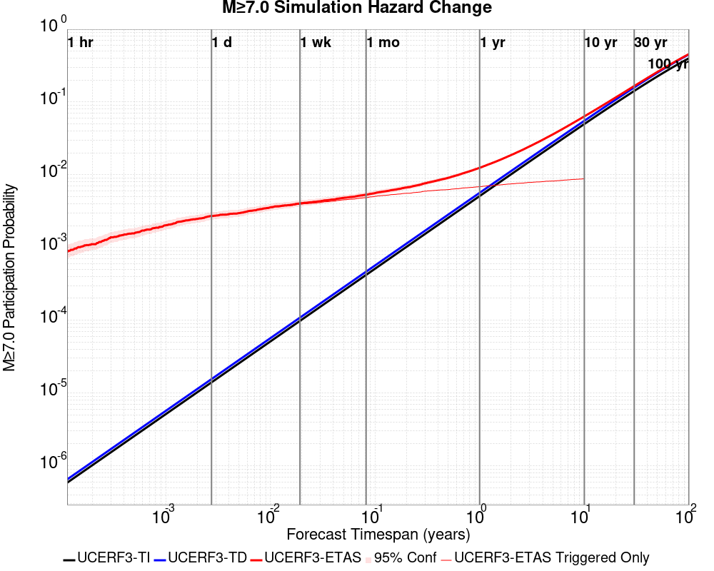
| Forecast Duration | UCERF3-ETAS [95% Conf] | UCERF3-ETAS Triggered Only | UCERF3-TD | UCERF3-ETAS/TD Gain | UCERF3-TI |
|---|---|---|---|---|---|
| 1 Hour | 8.67E-4 [6.73E-4 - 1.11E-3] | 8.66E-4 | 6.47E-7 | 1340.07 | 5.83E-7 |
| 1 Day | 2.78E-3 [2.42E-3 - 3.19E-3] | 2.76E-3 | 1.55E-5 | 178.84 | 1.40E-5 |
| 1 Week | 4.15E-3 [3.72E-3 - 4.65E-3] | 4.05E-3 | 1.09E-4 | 38.24 | 9.80E-5 |
| 1 Month | 5.38E-3 [4.89E-3 - 5.91E-3] | 4.91E-3 | 4.66E-4 | 11.55 | 4.20E-4 |
| 1 Year | 0.013 [0.012 - 0.013] | 6.90E-3 | 5.65E-3 | 2.21 | 5.10E-3 |
| 10 Years | 0.064 [0.063 - 0.064] | 8.85E-3 | 0.055 | 1.15 | 0.050 |
| 30 Years | 0.166 [0.166 - 0.167] * | * | 0.159 | 1.05 * | 0.142 |
| 100 Years | 0.457 [0.457 - 0.457] * | * | 0.452 | 1.01 * | 0.400 |
* forecast duration is longer than simulation length, only ETAS ruptures from the first 10 years are included

| Forecast Duration | UCERF3-ETAS [95% Conf] | UCERF3-ETAS Triggered Only | UCERF3-TD | UCERF3-ETAS/TD Gain | UCERF3-TI |
|---|---|---|---|---|---|
| 1 Hour | 1.24E-8 [1.24E-8 - 6.48E-5] | 0.000 | 1.24E-8 | 1 | 1.06E-8 |
| 1 Day | 1.38E-5 [1.00E-6 - 8.82E-5] | 1.35E-5 | 2.97E-7 | 46.6 | 2.54E-7 |
| 1 Week | 1.56E-5 [2.78E-6 - 9.00E-5] | 1.35E-5 | 2.08E-6 | 7.51 | 1.78E-6 |
| 1 Month | 2.24E-5 [9.61E-6 - 9.68E-5] | 1.35E-5 | 8.90E-6 | 2.52 | 7.63E-6 |
| 1 Year | 1.22E-4 [1.09E-4 - 1.96E-4] | 1.35E-5 | 1.08E-4 | 1.12 | 9.29E-5 |
| 10 Years | 1.11E-3 [1.10E-3 - 1.18E-3] | 1.35E-5 | 1.10E-3 | 1.01 | 9.29E-4 |
| 30 Years | 3.52E-3 [3.50E-3 - 3.59E-3] * | * | 3.50E-3 | 1 * | 2.78E-3 |
| 100 Years | 0.014 [0.014 - 0.014] * | * | 0.014 | 1 * | 9.25E-3 |
* forecast duration is longer than simulation length, only ETAS ruptures from the first 10 years are included

| Section Name | Strike, Dip, Rake | # Hypos In Poly | Max Mag w/ Hypo In Poly | # Surfs In Poly | Max Mag w/ Surf In Poly | Min Dist To Any (km) | Min Poly Dist To Any (km) | Min Dist To Largest (km) | Min Poly Dist To Largest (km) |
|---|---|---|---|---|---|---|---|---|---|
| Airport Lake | 358, 50, -90 | 0 | 0 | 12.124 | 2.716 | 12.221 | 2.716 | ||
| Little Lake | 327, 90, 180 | 0 | 0 | 16.936 | 4.928 | 16.936 | 4.928 | ||
| Tank Canyon | 189, 50, -90 | 0 | 0 | 17.039 | 16.895 | 17.039 | 16.895 |
These are map plots of individual catalogs from the simulations, selected as the closest catalog to each of the given percentiles in terms of total number of events.
| Duration | p0.0 %-ile | p25.0 %-ile | p50.0 %-ile | p75.0 %-ile | p90.0 %-ile | p95.0 %-ile | p97.5 %-ile | p98.0 %-ile | p99.0 %-ile | p99.5 %-ile | p99.9 %-ile | p100.0 %-ile |
|---|---|---|---|---|---|---|---|---|---|---|---|---|
| 1 Week |  |  |  |  |  | 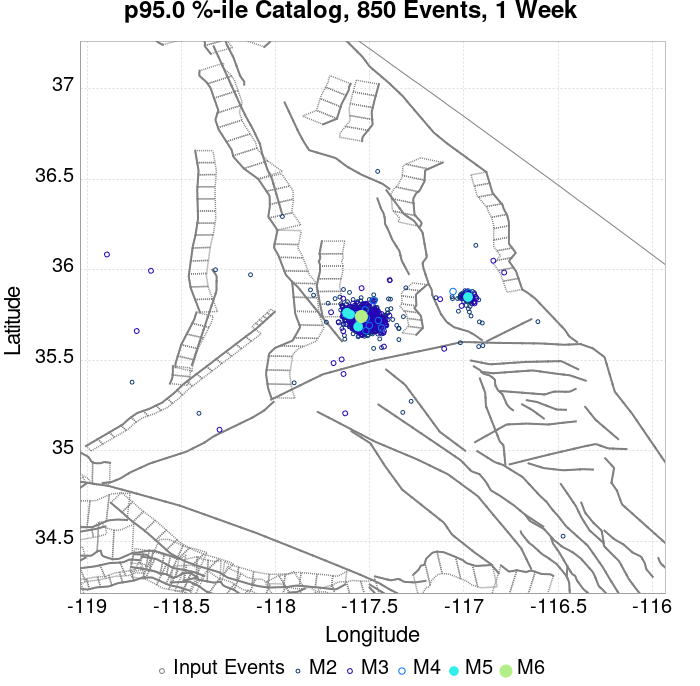 |  |  |  |  |  |  |
| 1 Month |  |  |  |  |  |  |  |  |  |  |  |  |
| 1 Year |  |  |  |  |  |  | 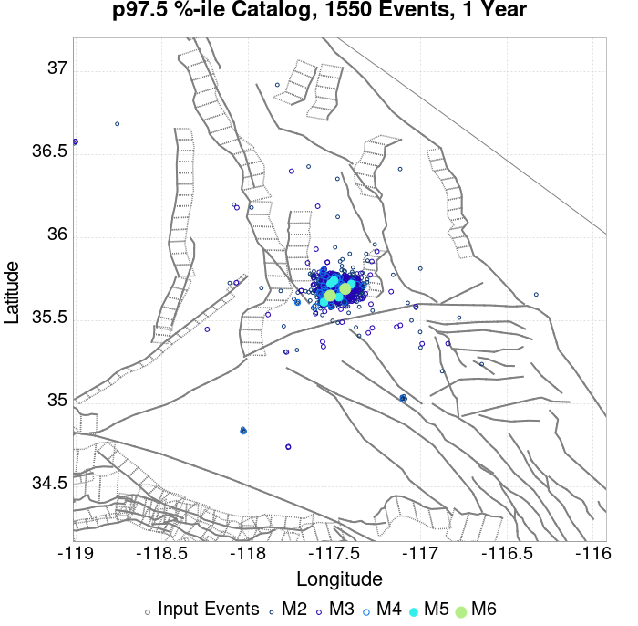 |  |  |  |  |  |
| 10 Year |  |  |  |  |  |  |  |  | 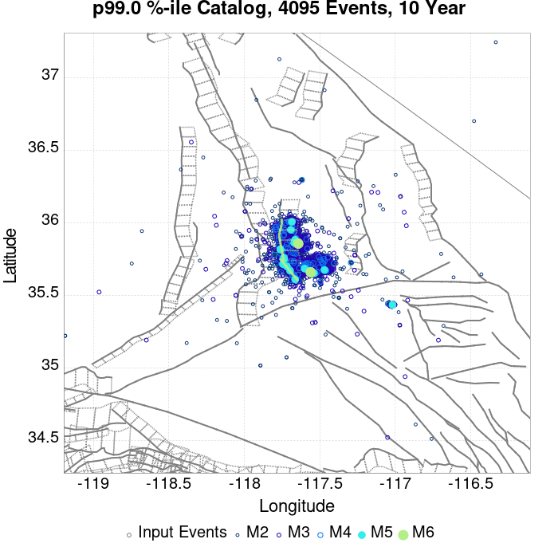 |  |  | 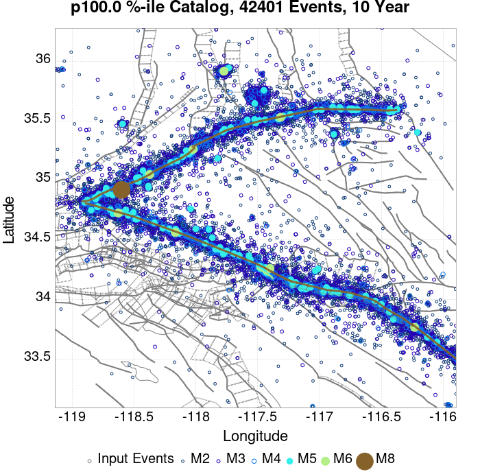 |
These plots compare simulated sequences with data from ComCat. All plots only consider events with hypocenters inside the ComCat region defined in the JSON input file, and consider ruptures above Mc=3.5
Last updated at 2019/09/21 02:33:50 UTC, 78.4 d after the simulation start time
| Incremental MND | Cumulative MND |
|---|---|
 |  |
| M≥3.5 | M≥4 | M≥5 | M≥6 | M≥7 | M≥8 |
|---|---|---|---|---|---|
 |  |  |  |  |

| 1 Day | 1 Week | 1 Month | Current (78.4 Day) | |
|---|---|---|---|---|
| M≥3.5 |  |  |  | |
| M≥4 |  |  |  |  |
| M≥5 |  |  |  |  |
| M≥6 |  |  |  | 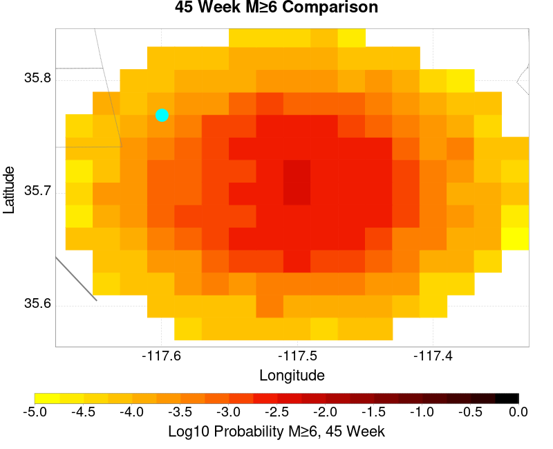 |
| M≥7 |  |  |  |  |
| M≥8 |  |  |  |  |
| 1 Day | 1 Week | 1 Month | Current (78.4 Day) | |
|---|---|---|---|---|
| M≥3.5 |  | 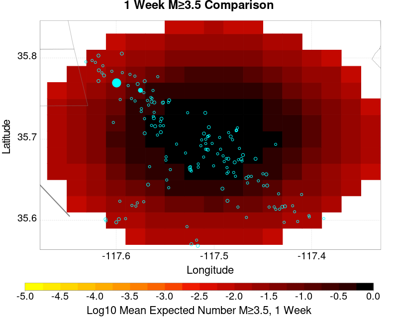 |  |  |
| M≥4 |  | 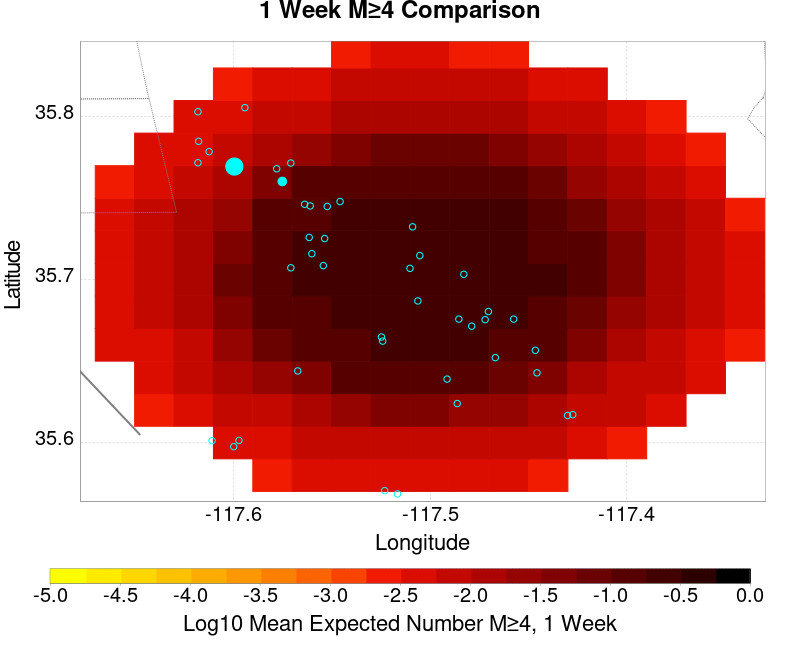 |  |  |
| M≥5 |  |  |  |  |
| M≥6 |  |  |  |  |
| M≥7 |  |  |  |  |
| M≥8 |  |  |  |  |
| M≥3.5 | M≥4 | M≥5 | M≥6 | M≥7 | M≥8 |
|---|---|---|---|---|---|
 |  |  |  |  |
| Min Mag | 1 yr Triggered Ruptures (no spontaneous) | 10 yr Triggered Ruptures (no spontaneous) | 10 yr Triggered Ruptures (primary aftershocks only) |
|---|---|---|---|
| All Supra. Seis. |  |  |  |
| M≥6.5 |  |  | 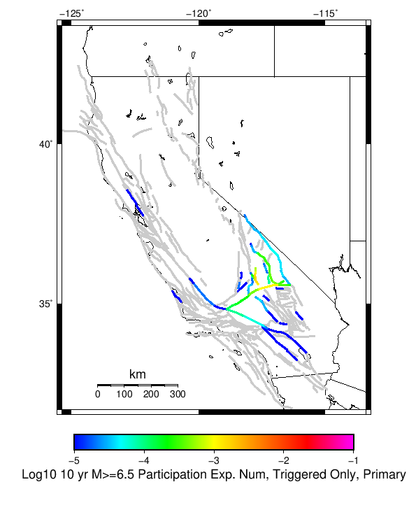 |
| M≥7 |  |  | 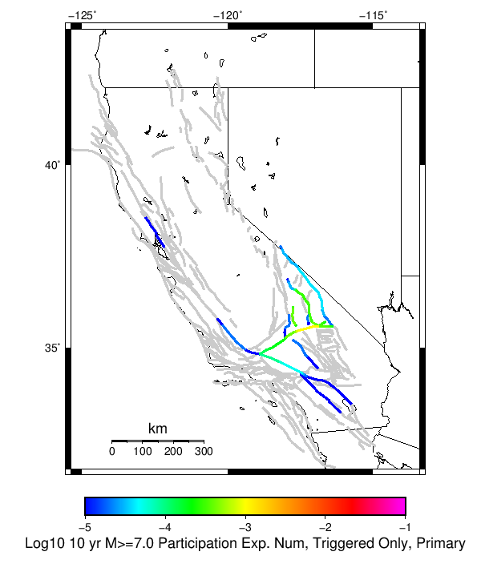 |
| M≥7.5 |  |  |  |
| M≥8 |  |  |  |
First 10 of 89 with matching ruptures shown
| Parent Name | Triggered 10 Year Mean Count | Triggered 1 Day Prob | Triggered 1 Week Prob | Triggered 1 Month Prob | Triggered 1 Year Prob | Triggered 10 Year Prob | Triggered 10 Year Primary Mean Count |
|---|---|---|---|---|---|---|---|
| Garlock (Central) | 0.0076589985 | 0.0017997294 | 0.0028010826 | 0.0035317997 | 0.005277402 | 0.0075236806 | 0.0022868742 |
| Little Lake | 0.006332882 | 0.00202977 | 0.0027604871 | 0.0034235453 | 0.0048985113 | 0.0062652235 | 0.0026522328 |
| Airport Lake | 0.00473613 | 0.001556157 | 0.0022733423 | 0.0027875507 | 0.0038836265 | 0.0047090664 | 0.002151556 |
| Panamint Valley | 0.0022056834 | 5.006766E-4 | 8.79567E-4 | 0.0010554803 | 0.0015155616 | 0.0021786198 | 6.359946E-4 |
| Tank Canyon | 0.0015426251 | 2.70636E-4 | 4.6008118E-4 | 6.901218E-4 | 0.0011366712 | 0.0015290934 | 4.4654938E-4 |
| Owl Lake | 0.001217862 | 2.841678E-4 | 4.194858E-4 | 6.08931E-4 | 8.79567E-4 | 0.001217862 | 3.518268E-4 |
| Hunter Mountain-Saline Valley | 0.0011502029 | 2.3004059E-4 | 4.871448E-4 | 5.953992E-4 | 8.11908E-4 | 0.0011366712 | 3.3829498E-4 |
| Garlock (East) | 0.0010960757 | 2.70636E-4 | 4.05954E-4 | 4.7361298E-4 | 8.2543975E-4 | 0.001082544 | 4.05954E-4 |
| Garlock (West) | 6.7658996E-4 | 1.6238159E-4 | 2.02977E-4 | 2.976996E-4 | 4.330176E-4 | 6.7658996E-4 | 2.70636E-4 |
| Ash Hill | 3.788904E-4 | 5.41272E-5 | 9.47226E-5 | 1.6238159E-4 | 2.3004059E-4 | 3.788904E-4 | 6.7659E-5 |
First 10 of 71 with matching ruptures shown
| Parent Name | Triggered 10 Year Mean Count | Triggered 1 Day Prob | Triggered 1 Week Prob | Triggered 1 Month Prob | Triggered 1 Year Prob | Triggered 10 Year Prob | Triggered 10 Year Primary Mean Count |
|---|---|---|---|---|---|---|---|
| Airport Lake | 0.0037483086 | 0.0012719892 | 0.0018403247 | 0.0022192153 | 0.003112314 | 0.0037483086 | 0.0017320703 |
| Garlock (Central) | 0.0036806494 | 9.607578E-4 | 0.0014749662 | 0.0018538566 | 0.0026522328 | 0.003653586 | 0.0012990527 |
| Little Lake | 0.0035317997 | 0.0011231394 | 0.0015696888 | 0.0019350473 | 0.002774019 | 0.003518268 | 0.0014749662 |
| Panamint Valley | 0.0020433017 | 4.7361298E-4 | 8.525034E-4 | 0.001014885 | 0.0014073072 | 0.0020162382 | 6.08931E-4 |
| Hunter Mountain-Saline Valley | 0.0011502029 | 2.3004059E-4 | 4.871448E-4 | 5.953992E-4 | 8.11908E-4 | 0.0011366712 | 3.3829498E-4 |
| Owl Lake | 0.001082544 | 2.571042E-4 | 3.924222E-4 | 5.683356E-4 | 8.11908E-4 | 0.001082544 | 3.2476318E-4 |
| Garlock (East) | 0.001014885 | 2.435724E-4 | 3.653586E-4 | 4.330176E-4 | 7.577808E-4 | 0.001014885 | 4.05954E-4 |
| Garlock (West) | 6.4952637E-4 | 1.6238159E-4 | 2.02977E-4 | 2.841678E-4 | 4.194858E-4 | 6.4952637E-4 | 2.571042E-4 |
| Tank Canyon | 3.653586E-4 | 6.7659E-5 | 9.47226E-5 | 1.35318E-4 | 2.571042E-4 | 3.653586E-4 | 1.082544E-4 |
| So Sierra Nevada | 3.518268E-4 | 6.7659E-5 | 1.217862E-4 | 1.6238159E-4 | 2.841678E-4 | 3.518268E-4 | 8.1190796E-5 |
First 10 of 49 with matching ruptures shown
| Parent Name | Triggered 10 Year Mean Count | Triggered 1 Day Prob | Triggered 1 Week Prob | Triggered 1 Month Prob | Triggered 1 Year Prob | Triggered 10 Year Prob | Triggered 10 Year Primary Mean Count |
|---|---|---|---|---|---|---|---|
| Garlock (Central) | 0.0033829499 | 8.79567E-4 | 0.0013802436 | 0.0017320703 | 0.0024627876 | 0.0033558863 | 0.0012043301 |
| Panamint Valley | 0.0015290934 | 3.653586E-4 | 6.7658996E-4 | 7.7131257E-4 | 0.0010690122 | 0.0015155616 | 4.871448E-4 |
| Hunter Mountain-Saline Valley | 0.001082544 | 2.3004059E-4 | 4.871448E-4 | 5.818674E-4 | 7.7131257E-4 | 0.001082544 | 3.3829498E-4 |
| Owl Lake | 0.001014885 | 2.571042E-4 | 3.924222E-4 | 5.683356E-4 | 7.7131257E-4 | 0.001014885 | 3.112314E-4 |
| Garlock (East) | 9.4722596E-4 | 2.435724E-4 | 3.518268E-4 | 4.194858E-4 | 7.307172E-4 | 9.4722596E-4 | 4.05954E-4 |
| Little Lake | 9.066306E-4 | 3.653586E-4 | 4.7361298E-4 | 5.2774017E-4 | 7.9837616E-4 | 9.066306E-4 | 4.194858E-4 |
| Airport Lake | 8.660352E-4 | 3.518268E-4 | 4.4654938E-4 | 5.006766E-4 | 7.7131257E-4 | 8.660352E-4 | 4.194858E-4 |
| Garlock (West) | 6.4952637E-4 | 1.6238159E-4 | 2.02977E-4 | 2.841678E-4 | 4.194858E-4 | 6.4952637E-4 | 2.571042E-4 |
| San Andreas (Mojave N) | 2.976996E-4 | 1.082544E-4 | 1.217862E-4 | 1.6238159E-4 | 2.3004059E-4 | 2.976996E-4 | 1.082544E-4 |
| San Andreas (Mojave S) | 2.435724E-4 | 8.1190796E-5 | 9.47226E-5 | 1.35318E-4 | 1.894452E-4 | 2.435724E-4 | 1.082544E-4 |
First 10 of 31 with matching ruptures shown
| Parent Name | Triggered 10 Year Mean Count | Triggered 1 Day Prob | Triggered 1 Week Prob | Triggered 1 Month Prob | Triggered 1 Year Prob | Triggered 10 Year Prob | Triggered 10 Year Primary Mean Count |
|---|---|---|---|---|---|---|---|
| Garlock (Central) | 0.0015426251 | 3.3829498E-4 | 6.08931E-4 | 7.44249E-4 | 0.0010419486 | 0.0015426251 | 5.41272E-4 |
| Hunter Mountain-Saline Valley | 0.0010419486 | 2.3004059E-4 | 4.871448E-4 | 5.683356E-4 | 7.44249E-4 | 0.0010419486 | 3.3829498E-4 |
| Panamint Valley | 0.0010419486 | 2.3004059E-4 | 4.871448E-4 | 5.683356E-4 | 7.44249E-4 | 0.0010419486 | 3.3829498E-4 |
| Garlock (West) | 5.818674E-4 | 1.35318E-4 | 1.759134E-4 | 2.3004059E-4 | 3.653586E-4 | 5.818674E-4 | 2.3004059E-4 |
| Garlock (East) | 3.653586E-4 | 9.47226E-5 | 1.35318E-4 | 1.6238159E-4 | 2.70636E-4 | 3.653586E-4 | 1.6238159E-4 |
| San Andreas (Mojave N) | 2.976996E-4 | 1.082544E-4 | 1.217862E-4 | 1.6238159E-4 | 2.3004059E-4 | 2.976996E-4 | 1.082544E-4 |
| San Andreas (Mojave S) | 2.435724E-4 | 8.1190796E-5 | 9.47226E-5 | 1.35318E-4 | 1.894452E-4 | 2.435724E-4 | 1.082544E-4 |
| Owl Lake | 1.35318E-4 | 2.70636E-5 | 2.70636E-5 | 4.0595398E-5 | 6.7659E-5 | 1.35318E-4 | 2.70636E-5 |
| San Andreas (San Bernardino N) | 1.082544E-4 | 2.70636E-5 | 2.70636E-5 | 4.0595398E-5 | 8.1190796E-5 | 1.082544E-4 | 5.41272E-5 |
| Death Valley (Black Mtns Frontal) | 9.47226E-5 | 5.41272E-5 | 6.7659E-5 | 8.1190796E-5 | 8.1190796E-5 | 9.47226E-5 | 5.41272E-5 |
| Parent Name | Triggered 10 Year Mean Count | Triggered 1 Day Prob | Triggered 1 Week Prob | Triggered 1 Month Prob | Triggered 1 Year Prob | Triggered 10 Year Prob | Triggered 10 Year Primary Mean Count |
|---|---|---|---|---|---|---|---|
| Garlock (Central) | 1.35318E-5 | 1.35318E-5 | 1.35318E-5 | 1.35318E-5 | 1.35318E-5 | 1.35318E-5 | 1.35318E-5 |
| Garlock (East) | 1.35318E-5 | 1.35318E-5 | 1.35318E-5 | 1.35318E-5 | 1.35318E-5 | 1.35318E-5 | 1.35318E-5 |
| Garlock (West) | 1.35318E-5 | 1.35318E-5 | 1.35318E-5 | 1.35318E-5 | 1.35318E-5 | 1.35318E-5 | 1.35318E-5 |
| San Andreas (Coachella) rev | 1.35318E-5 | 1.35318E-5 | 1.35318E-5 | 1.35318E-5 | 1.35318E-5 | 1.35318E-5 | 1.35318E-5 |
| San Andreas (Mojave N) | 1.35318E-5 | 1.35318E-5 | 1.35318E-5 | 1.35318E-5 | 1.35318E-5 | 1.35318E-5 | 1.35318E-5 |
| San Andreas (Mojave S) | 1.35318E-5 | 1.35318E-5 | 1.35318E-5 | 1.35318E-5 | 1.35318E-5 | 1.35318E-5 | 1.35318E-5 |
| San Andreas (North Branch Mill Creek) | 1.35318E-5 | 1.35318E-5 | 1.35318E-5 | 1.35318E-5 | 1.35318E-5 | 1.35318E-5 | 1.35318E-5 |
| San Andreas (San Bernardino N) | 1.35318E-5 | 1.35318E-5 | 1.35318E-5 | 1.35318E-5 | 1.35318E-5 | 1.35318E-5 | 1.35318E-5 |
The first 5 sections (sorted by trigger rate) are plotted below. All fault MPDs are available here
| 1 Week | 1 Month | 1 Year | 10 Year |
|---|---|---|---|
 |  |  |  |
 |  |  |  |
 |  |  |  |
 |  |  |  |
 |  |  |  |
| Min Mag | Triggered Ruptures (no spontaneous) | Triggered Ruptures (primary aftershocks only) |
|---|---|---|
| M≥2.5 |  |  |
| M≥5 |  |  |
| M≥6 |  | 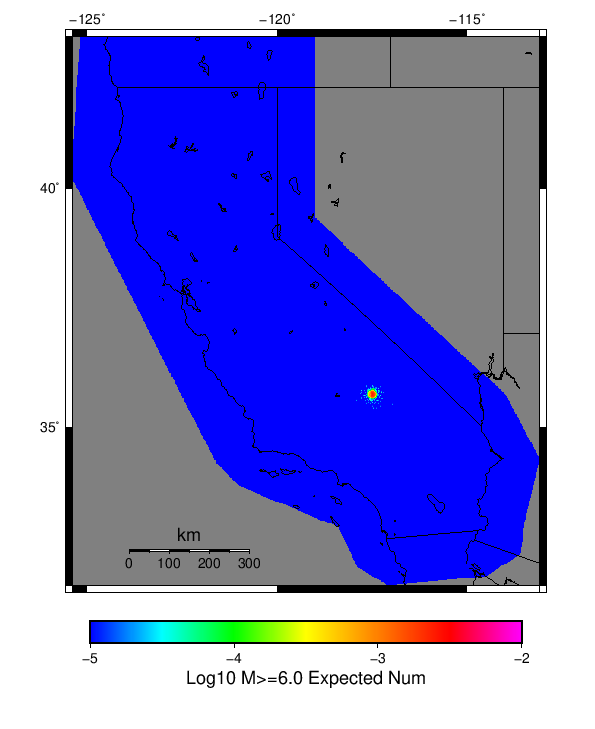 |
| M≥7 |  |
{
"numSimulations": 100000,
"duration": 10.0,
"startTimeMillis": 1562261630000,
"includeSpontaneous": false,
"randomSeed": 1568924297288,
"binaryOutput": true,
"binaryOutputFilters": [
{
"prefix": "results_complete",
"descendantsOnly": false
},
{
"prefix": "results_m5_preserve_chain",
"minMag": 5.0,
"preserveChainBelowMag": true,
"descendantsOnly": false
}
],
"forceRecalc": false,
"simulationName": "ComCat M6.4 (ci38443183), Point Sources, Impose G-R",
"numRetries": 3,
"outputDir": "${ETAS_SIM_DIR}/2019_09_19-ComCatM6p4_ci38443183_PointSources_ImposeGR",
"triggerRuptures": [
{
"occurrenceTimeMillis": 1562259775340,
"comcatEventID": "ci38443095",
"mag": 3.98,
"latitude": 35.708,
"longitude": -117.5036667,
"depth": 10.58
},
{
"occurrenceTimeMillis": 1562261629000,
"comcatEventID": "ci38443183",
"mag": 6.4,
"latitude": 35.7053333,
"longitude": -117.5038333,
"depth": 10.5
}
],
"cacheDir": "${ETAS_LAUNCHER}/inputs/cache_fm3p1_ba",
"fssFile": "${ETAS_LAUNCHER}/inputs/2013_05_10-ucerf3p3-production-10runs_COMPOUND_SOL_FM3_1_SpatSeisU3_MEAN_BRANCH_AVG_SOL.zip",
"probModel": "FULL_TD",
"applySubSeisForSupraNucl": true,
"totRateScaleFactor": 1.14,
"gridSeisCorr": true,
"timeIndependentERF": false,
"griddedOnly": false,
"imposeGR": true,
"includeIndirectTriggering": true,
"gridSeisDiscr": 0.1,
"catalogCompletenessModel": "RELAXED",
"configCommand": "u3etas_comcat_event_config_builder.sh --event-id ci38443183 --num-simulations 100000 --days-before 7 --impose-gr --mag-complete 3.5 --hpc-site USC_HPC --nodes 36 --hours 24 --queue scec",
"configTime": 1568924297288,
"comcatMetadata": {
"region": {
"centerLatitude": 35.7053333,
"centerLongitude": -117.5038333,
"radius": 15.703628043335499
},
"eventID": "ci38443183",
"minDepth": -10.0,
"maxDepth": 24.0,
"minMag": 2.5,
"startTime": 1561656829000,
"endTime": 1562261629001,
"magComplete": 3.5
}
}